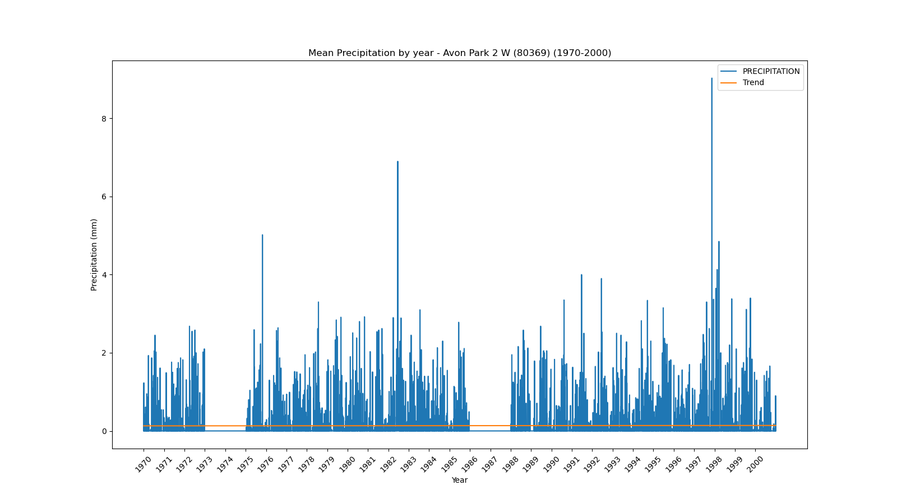
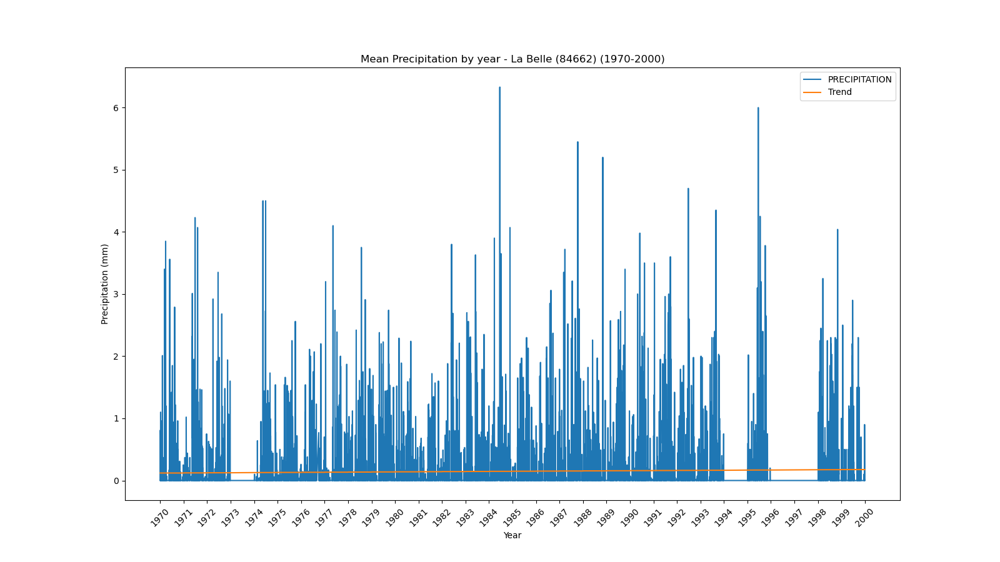
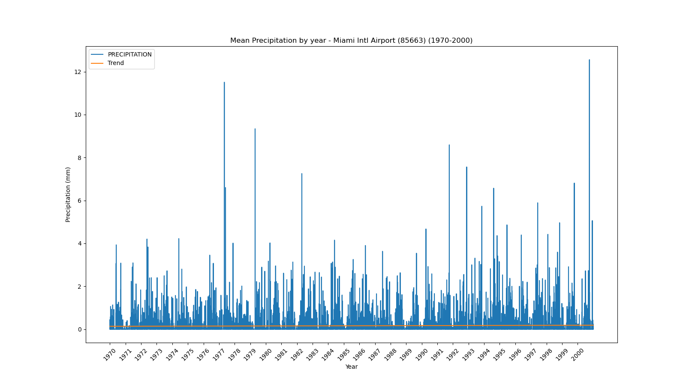
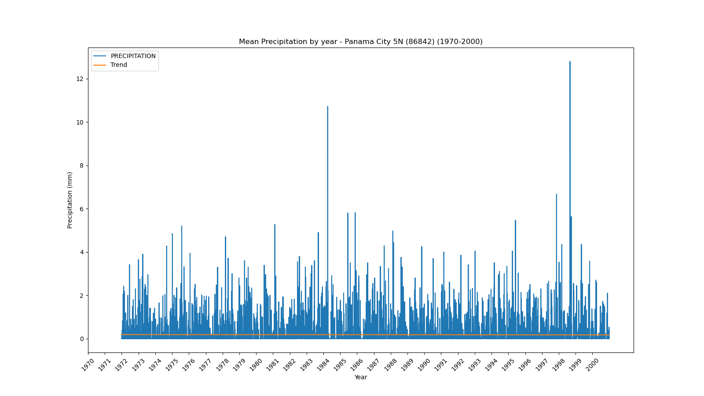

<!DOCTYPE html>
<html>
<head>
    
    <meta http-equiv="content-type" content="text/html; charset=UTF-8" />
    
        <script>
            L_NO_TOUCH = false;
            L_DISABLE_3D = false;
        </script>
    
    <style>html, body {width: 100%;height: 100%;margin: 0;padding: 0;}</style>
    <style>#map {position:absolute;top:0;bottom:0;right:0;left:0;}</style>
    <script src="https://cdn.jsdelivr.net/npm/leaflet@1.9.3/dist/leaflet.js"></script>
    <script src="https://code.jquery.com/jquery-1.12.4.min.js"></script>
    <script src="https://cdn.jsdelivr.net/npm/bootstrap@5.2.2/dist/js/bootstrap.bundle.min.js"></script>
    <script src="https://cdnjs.cloudflare.com/ajax/libs/Leaflet.awesome-markers/2.0.2/leaflet.awesome-markers.js"></script>
    <link rel="stylesheet" href="https://cdn.jsdelivr.net/npm/leaflet@1.9.3/dist/leaflet.css"/>
    <link rel="stylesheet" href="https://cdn.jsdelivr.net/npm/bootstrap@5.2.2/dist/css/bootstrap.min.css"/>
    <link rel="stylesheet" href="https://netdna.bootstrapcdn.com/bootstrap/3.0.0/css/bootstrap.min.css"/>
    <link rel="stylesheet" href="https://cdn.jsdelivr.net/npm/@fortawesome/fontawesome-free@6.2.0/css/all.min.css"/>
    <link rel="stylesheet" href="https://cdnjs.cloudflare.com/ajax/libs/Leaflet.awesome-markers/2.0.2/leaflet.awesome-markers.css"/>
    <link rel="stylesheet" href="https://cdn.jsdelivr.net/gh/python-visualization/folium/folium/templates/leaflet.awesome.rotate.min.css"/>
    
            <meta name="viewport" content="width=device-width,
                initial-scale=1.0, maximum-scale=1.0, user-scalable=no" />
            <style>
                #map_0e6ba46f008f4b22526941877a0d9e1d {
                    position: relative;
                    width: 100.0%;
                    height: 100.0%;
                    left: 0.0%;
                    top: 0.0%;
                }
                .leaflet-container { font-size: 1rem; }
            </style>
        
</head>
<body>
    
    
            <div class="folium-map" id="map_0e6ba46f008f4b22526941877a0d9e1d" ></div>
        
</body>
<script>
    
    
            var map_0e6ba46f008f4b22526941877a0d9e1d = L.map(
                "map_0e6ba46f008f4b22526941877a0d9e1d",
                {
                    center: [28.0, -82.5],
                    crs: L.CRS.EPSG3857,
                    zoom: 7,
                    zoomControl: false,
                    preferCanvas: false,
                }
            );

            

        
    
            var tile_layer_dfad3a47ed8688f81fe7aed206fd35e8 = L.tileLayer(
                "https://cartodb-basemaps-{s}.global.ssl.fastly.net/dark_all/{z}/{x}/{y}.png",
                {"attribution": "\u0026copy; \u003ca target=\"_blank\" href=\"http://www.openstreetmap.org/copyright\"\u003eOpenStreetMap\u003c/a\u003e contributors \u0026copy; \u003ca target=\"_blank\" href=\"http://cartodb.com/attributions\"\u003eCartoDB\u003c/a\u003e, CartoDB \u003ca target=\"_blank\" href =\"http://cartodb.com/attributions\"\u003eattributions\u003c/a\u003e", "detectRetina": false, "maxNativeZoom": 18, "maxZoom": 18, "minZoom": 7, "noWrap": false, "opacity": 1, "subdomains": "abc", "tms": false}
            ).addTo(map_0e6ba46f008f4b22526941877a0d9e1d);
        
    
            var marker_f5cc239d9fd9c7863a190bb848e08245 = L.marker(
                [29.72, -85.03],
                {}
            ).addTo(map_0e6ba46f008f4b22526941877a0d9e1d);
        
    
            var icon_7cefe6c911505451bd35f0d4e614000a = L.AwesomeMarkers.icon(
                {"extraClasses": "fa-rotate-0", "icon": "info-sign", "iconColor": "white", "markerColor": "lightgreen", "prefix": "glyphicon"}
            );
            marker_f5cc239d9fd9c7863a190bb848e08245.setIcon(icon_7cefe6c911505451bd35f0d4e614000a);
        
    
        var popup_38d4c71421f23a35d1da27d1665484f5 = L.popup({"maxWidth": 1000, "minWidth": 500});

        
            
                var html_19399a555a6de5021a1f9f9f83e54d01 = $(`<div id="html_19399a555a6de5021a1f9f9f83e54d01" style="width: 100.0%; height: 100.0%;"><b>Apalachicola Airport (80211)</b><br>lat: 29.72, lon: -85.03<br><a href='../../static/img/plots/timeseries/precip_daily/80211_1970-2000.png' target='_BLANK'></a></div>`)[0];
                popup_38d4c71421f23a35d1da27d1665484f5.setContent(html_19399a555a6de5021a1f9f9f83e54d01);
            
        

        marker_f5cc239d9fd9c7863a190bb848e08245.bindPopup(popup_38d4c71421f23a35d1da27d1665484f5)
        ;

        
    
    
            var marker_1a636888e9cd412f3938a3eba524fd38 = L.marker(
                [27.22, -81.86],
                {}
            ).addTo(map_0e6ba46f008f4b22526941877a0d9e1d);
        
    
            var icon_35c9920c52f5e81b33bbb9598de8015d = L.AwesomeMarkers.icon(
                {"extraClasses": "fa-rotate-0", "icon": "info-sign", "iconColor": "white", "markerColor": "lightgreen", "prefix": "glyphicon"}
            );
            marker_1a636888e9cd412f3938a3eba524fd38.setIcon(icon_35c9920c52f5e81b33bbb9598de8015d);
        
    
        var popup_8fd66f83a22e17506f5d989c63f21394 = L.popup({"maxWidth": 1000, "minWidth": 500});

        
            
                var html_bd2aef669d70471346ed95696f1f0259 = $(`<div id="html_bd2aef669d70471346ed95696f1f0259" style="width: 100.0%; height: 100.0%;"><b>Arcadia (80228)</b><br>lat: 27.22, lon: -81.86<br><a href='../../static/img/plots/timeseries/precip_daily/80228_1970-2000.png' target='_BLANK'></a></div>`)[0];
                popup_8fd66f83a22e17506f5d989c63f21394.setContent(html_bd2aef669d70471346ed95696f1f0259);
            
        

        marker_1a636888e9cd412f3938a3eba524fd38.bindPopup(popup_8fd66f83a22e17506f5d989c63f21394)
        ;

        
    
    
            var marker_c6feb2ceabd296547ab74ab565104714 = L.marker(
                [27.18, -81.35],
                {}
            ).addTo(map_0e6ba46f008f4b22526941877a0d9e1d);
        
    
            var icon_e3847975487aef2cf60227f190cac880 = L.AwesomeMarkers.icon(
                {"extraClasses": "fa-rotate-0", "icon": "info-sign", "iconColor": "white", "markerColor": "lightgreen", "prefix": "glyphicon"}
            );
            marker_c6feb2ceabd296547ab74ab565104714.setIcon(icon_e3847975487aef2cf60227f190cac880);
        
    
        var popup_de9a12c3f495dc179402d19342f87f80 = L.popup({"maxWidth": 1000, "minWidth": 500});

        
            
                var html_59d9279eb256bfce669fd7064035a73c = $(`<div id="html_59d9279eb256bfce669fd7064035a73c" style="width: 100.0%; height: 100.0%;"><b>Archbold Bio Station (80236)</b><br>lat: 27.18, lon: -81.35<br><a href='../../static/img/plots/timeseries/precip_daily/80236_1970-2000.png' target='_BLANK'></a></div>`)[0];
                popup_de9a12c3f495dc179402d19342f87f80.setContent(html_59d9279eb256bfce669fd7064035a73c);
            
        

        marker_c6feb2ceabd296547ab74ab565104714.bindPopup(popup_de9a12c3f495dc179402d19342f87f80)
        ;

        
    
    
            var marker_de78245630419044ee62aedbce09be32 = L.marker(
                [27.59, -81.53],
                {}
            ).addTo(map_0e6ba46f008f4b22526941877a0d9e1d);
        
    
            var icon_7e4cfa67ef17bd16490a640911b8db42 = L.AwesomeMarkers.icon(
                {"extraClasses": "fa-rotate-0", "icon": "info-sign", "iconColor": "white", "markerColor": "lightgreen", "prefix": "glyphicon"}
            );
            marker_de78245630419044ee62aedbce09be32.setIcon(icon_7e4cfa67ef17bd16490a640911b8db42);
        
    
        var popup_f095cb21732389ae83c96692b1bd6a6b = L.popup({"maxWidth": 1000, "minWidth": 500});

        
            
                var html_1307b0ba915c3482613163398641e020 = $(`<div id="html_1307b0ba915c3482613163398641e020" style="width: 100.0%; height: 100.0%;"><b>Avon Park 2 W (80369)</b><br>lat: 27.59, lon: -81.53<br><a href='../../static/img/plots/timeseries/precip_daily/80369_1970-2000.png' target='_BLANK'></a></div>`)[0];
                popup_f095cb21732389ae83c96692b1bd6a6b.setContent(html_1307b0ba915c3482613163398641e020);
            
        

        marker_de78245630419044ee62aedbce09be32.bindPopup(popup_f095cb21732389ae83c96692b1bd6a6b)
        ;

        
    
    
            var marker_3a55a8d487b03fef4bf5dc6e8999794a = L.marker(
                [27.95, -81.79],
                {}
            ).addTo(map_0e6ba46f008f4b22526941877a0d9e1d);
        
    
            var icon_8e1d98c097ac1987b58da76d9d61de23 = L.AwesomeMarkers.icon(
                {"extraClasses": "fa-rotate-0", "icon": "info-sign", "iconColor": "white", "markerColor": "lightgreen", "prefix": "glyphicon"}
            );
            marker_3a55a8d487b03fef4bf5dc6e8999794a.setIcon(icon_8e1d98c097ac1987b58da76d9d61de23);
        
    
        var popup_0d98d7948aaf8a3c730f8c2ee0392d5b = L.popup({"maxWidth": 1000, "minWidth": 500});

        
            
                var html_65367f01e60b5067120ff1fa73781f43 = $(`<div id="html_65367f01e60b5067120ff1fa73781f43" style="width: 100.0%; height: 100.0%;"><b>Bartow (80478)</b><br>lat: 27.95, lon: -81.79<br><a href='../../static/img/plots/timeseries/precip_daily/80478_1970-2000.png' target='_BLANK'></a></div>`)[0];
                popup_0d98d7948aaf8a3c730f8c2ee0392d5b.setContent(html_65367f01e60b5067120ff1fa73781f43);
            
        

        marker_3a55a8d487b03fef4bf5dc6e8999794a.bindPopup(popup_0d98d7948aaf8a3c730f8c2ee0392d5b)
        ;

        
    
    
            var marker_ee70d7be9936a7b5e6f9392c6a2fffaa = L.marker(
                [26.7, -80.66],
                {}
            ).addTo(map_0e6ba46f008f4b22526941877a0d9e1d);
        
    
            var icon_1d16f3b2c12f51dc9b23139d75b13b21 = L.AwesomeMarkers.icon(
                {"extraClasses": "fa-rotate-0", "icon": "info-sign", "iconColor": "white", "markerColor": "orange", "prefix": "glyphicon"}
            );
            marker_ee70d7be9936a7b5e6f9392c6a2fffaa.setIcon(icon_1d16f3b2c12f51dc9b23139d75b13b21);
        
    
        var popup_52501a0a45b4c53af8317406c64446c2 = L.popup({"maxWidth": 1000, "minWidth": 500});

        
            
                var html_0b7be06e749e239c59766784dfacd297 = $(`<div id="html_0b7be06e749e239c59766784dfacd297" style="width: 100.0%; height: 100.0%;"><b>Belle Glade Airport (80611)</b><br>lat: 26.7, lon: -80.66<br><a href='../../static/img/plots/timeseries/precip_daily/80611_1970-2000.png' target='_BLANK'></a></div>`)[0];
                popup_52501a0a45b4c53af8317406c64446c2.setContent(html_0b7be06e749e239c59766784dfacd297);
            
        

        marker_ee70d7be9936a7b5e6f9392c6a2fffaa.bindPopup(popup_52501a0a45b4c53af8317406c64446c2)
        ;

        
    
    
            var marker_f754a954e46a6ee1ff72c2a648ec8bbc = L.marker(
                [27.5, -82.57],
                {}
            ).addTo(map_0e6ba46f008f4b22526941877a0d9e1d);
        
    
            var icon_22ee974146dcd5c58e2073e2da4ff997 = L.AwesomeMarkers.icon(
                {"extraClasses": "fa-rotate-0", "icon": "info-sign", "iconColor": "white", "markerColor": "lightgreen", "prefix": "glyphicon"}
            );
            marker_f754a954e46a6ee1ff72c2a648ec8bbc.setIcon(icon_22ee974146dcd5c58e2073e2da4ff997);
        
    
        var popup_f50a4f9086a0718f032fcddf22f4b3df = L.popup({"maxWidth": 1000, "minWidth": 500});

        
            
                var html_3c7177605b2430db5d65b0392536fb31 = $(`<div id="html_3c7177605b2430db5d65b0392536fb31" style="width: 100.0%; height: 100.0%;"><b>Bradenton 5 ESE (80945)</b><br>lat: 27.5, lon: -82.57<br><a href='../../static/img/plots/timeseries/precip_daily/80945_1970-2000.png' target='_BLANK'></a></div>`)[0];
                popup_f50a4f9086a0718f032fcddf22f4b3df.setContent(html_3c7177605b2430db5d65b0392536fb31);
            
        

        marker_f754a954e46a6ee1ff72c2a648ec8bbc.bindPopup(popup_f50a4f9086a0718f032fcddf22f4b3df)
        ;

        
    
    
            var marker_3cd72048576b4896b9c49a8287e89dac = L.marker(
                [28.62, -82.37],
                {}
            ).addTo(map_0e6ba46f008f4b22526941877a0d9e1d);
        
    
            var icon_efd798726631655c2ff115153487de71 = L.AwesomeMarkers.icon(
                {"extraClasses": "fa-rotate-0", "icon": "info-sign", "iconColor": "white", "markerColor": "orange", "prefix": "glyphicon"}
            );
            marker_3cd72048576b4896b9c49a8287e89dac.setIcon(icon_efd798726631655c2ff115153487de71);
        
    
        var popup_290f0dadf2f2068fdaef8bac959dd64b = L.popup({"maxWidth": 1000, "minWidth": 500});

        
            
                var html_c6ddc7e5d1c0a7ac628f090122588f1e = $(`<div id="html_c6ddc7e5d1c0a7ac628f090122588f1e" style="width: 100.0%; height: 100.0%;"><b>Chinsegut Hill (81046)</b><br>lat: 28.62, lon: -82.37<br><a href='../../static/img/plots/timeseries/precip_daily/81046_1970-2000.png' target='_BLANK'></a></div>`)[0];
                popup_290f0dadf2f2068fdaef8bac959dd64b.setContent(html_c6ddc7e5d1c0a7ac628f090122588f1e);
            
        

        marker_3cd72048576b4896b9c49a8287e89dac.bindPopup(popup_290f0dadf2f2068fdaef8bac959dd64b)
        ;

        
    
    
            var marker_33ea6a47f7ac9de11f8755c829a130eb = L.marker(
                [28.66, -82.11],
                {}
            ).addTo(map_0e6ba46f008f4b22526941877a0d9e1d);
        
    
            var icon_1e59dbd82d6a9a11545befe29707d6b6 = L.AwesomeMarkers.icon(
                {"extraClasses": "fa-rotate-0", "icon": "info-sign", "iconColor": "white", "markerColor": "lightgreen", "prefix": "glyphicon"}
            );
            marker_33ea6a47f7ac9de11f8755c829a130eb.setIcon(icon_1e59dbd82d6a9a11545befe29707d6b6);
        
    
        var popup_f22abc7122cb0084c3c16f08351f38ff = L.popup({"maxWidth": 1000, "minWidth": 500});

        
            
                var html_0026b9a429198e89df8ce7d09a27ab7f = $(`<div id="html_0026b9a429198e89df8ce7d09a27ab7f" style="width: 100.0%; height: 100.0%;"><b>Bushnell 1 E (81163)</b><br>lat: 28.66, lon: -82.11<br><a href='../../static/img/plots/timeseries/precip_daily/81163_1970-2000.png' target='_BLANK'></a></div>`)[0];
                popup_f22abc7122cb0084c3c16f08351f38ff.setContent(html_0026b9a429198e89df8ce7d09a27ab7f);
            
        

        marker_33ea6a47f7ac9de11f8755c829a130eb.bindPopup(popup_f22abc7122cb0084c3c16f08351f38ff)
        ;

        
    
    
            var marker_95281d0781467e31dde6bcc18bd45d45 = L.marker(
                [26.86, -80.63],
                {}
            ).addTo(map_0e6ba46f008f4b22526941877a0d9e1d);
        
    
            var icon_583318e27abc769301495626cd40936f = L.AwesomeMarkers.icon(
                {"extraClasses": "fa-rotate-0", "icon": "info-sign", "iconColor": "white", "markerColor": "lightgreen", "prefix": "glyphicon"}
            );
            marker_95281d0781467e31dde6bcc18bd45d45.setIcon(icon_583318e27abc769301495626cd40936f);
        
    
        var popup_ad735af17f9f39d8682b7265d452ad80 = L.popup({"maxWidth": 1000, "minWidth": 500});

        
            
                var html_9245d303f1fdeb50374e44aed8207c51 = $(`<div id="html_9245d303f1fdeb50374e44aed8207c51" style="width: 100.0%; height: 100.0%;"><b>Canal Point (81276)</b><br>lat: 26.86, lon: -80.63<br><a href='../../static/img/plots/timeseries/precip_daily/81276_1970-2000.png' target='_BLANK'></a></div>`)[0];
                popup_ad735af17f9f39d8682b7265d452ad80.setContent(html_9245d303f1fdeb50374e44aed8207c51);
            
        

        marker_95281d0781467e31dde6bcc18bd45d45.bindPopup(popup_ad735af17f9f39d8682b7265d452ad80)
        ;

        
    
    
            var marker_4720ac01fcbcad15ab020df000996b3a = L.marker(
                [30.78, -85.54],
                {}
            ).addTo(map_0e6ba46f008f4b22526941877a0d9e1d);
        
    
            var icon_63d19c068168501ba5251ac06544798c = L.AwesomeMarkers.icon(
                {"extraClasses": "fa-rotate-0", "icon": "info-sign", "iconColor": "white", "markerColor": "lightgreen", "prefix": "glyphicon"}
            );
            marker_4720ac01fcbcad15ab020df000996b3a.setIcon(icon_63d19c068168501ba5251ac06544798c);
        
    
        var popup_3a392175ab76a3c6ce1edc22cc6da65e = L.popup({"maxWidth": 1000, "minWidth": 500});

        
            
                var html_fee286aaa8f2ab09122e5e0e7bb46418 = $(`<div id="html_fee286aaa8f2ab09122e5e0e7bb46418" style="width: 100.0%; height: 100.0%;"><b>Chipley (81544)</b><br>lat: 30.78, lon: -85.54<br><a href='../../static/img/plots/timeseries/precip_daily/81544_1970-2000.png' target='_BLANK'></a></div>`)[0];
                popup_3a392175ab76a3c6ce1edc22cc6da65e.setContent(html_fee286aaa8f2ab09122e5e0e7bb46418);
            
        

        marker_4720ac01fcbcad15ab020df000996b3a.bindPopup(popup_3a392175ab76a3c6ce1edc22cc6da65e)
        ;

        
    
    
            var marker_2e519b3477051e4bbf079e12570cd38a = L.marker(
                [28.56, -81.77],
                {}
            ).addTo(map_0e6ba46f008f4b22526941877a0d9e1d);
        
    
            var icon_4b199268d7594ba9bdbcc92380cfdb6f = L.AwesomeMarkers.icon(
                {"extraClasses": "fa-rotate-0", "icon": "info-sign", "iconColor": "white", "markerColor": "orange", "prefix": "glyphicon"}
            );
            marker_2e519b3477051e4bbf079e12570cd38a.setIcon(icon_4b199268d7594ba9bdbcc92380cfdb6f);
        
    
        var popup_68a77bc052a2efdb83827a3999f8acc6 = L.popup({"maxWidth": 1000, "minWidth": 500});

        
            
                var html_fee4ae5c6269fbd33a181b701a8a2bf3 = $(`<div id="html_fee4ae5c6269fbd33a181b701a8a2bf3" style="width: 100.0%; height: 100.0%;"><b>Clermont 9 S (81641)</b><br>lat: 28.56, lon: -81.77<br><a href='../../static/img/plots/timeseries/precip_daily/81641_1970-2000.png' target='_BLANK'></a></div>`)[0];
                popup_68a77bc052a2efdb83827a3999f8acc6.setContent(html_fee4ae5c6269fbd33a181b701a8a2bf3);
            
        

        marker_2e519b3477051e4bbf079e12570cd38a.bindPopup(popup_68a77bc052a2efdb83827a3999f8acc6)
        ;

        
    
    
            var marker_2caf100ecc5f4f83ea8ee53792cc9c06 = L.marker(
                [29.43, -81.51],
                {}
            ).addTo(map_0e6ba46f008f4b22526941877a0d9e1d);
        
    
            var icon_ca11877d0888371cc02953dcd012642b = L.AwesomeMarkers.icon(
                {"extraClasses": "fa-rotate-0", "icon": "info-sign", "iconColor": "white", "markerColor": "orange", "prefix": "glyphicon"}
            );
            marker_2caf100ecc5f4f83ea8ee53792cc9c06.setIcon(icon_ca11877d0888371cc02953dcd012642b);
        
    
        var popup_dc3074e06c16134de8275106bd5567b0 = L.popup({"maxWidth": 1000, "minWidth": 500});

        
            
                var html_e745fcb612aa37f4e4cad35f9cbf2b41 = $(`<div id="html_e745fcb612aa37f4e4cad35f9cbf2b41" style="width: 100.0%; height: 100.0%;"><b>Crescent City (81978)</b><br>lat: 29.43, lon: -81.51<br><a href='../../static/img/plots/timeseries/precip_daily/81978_1970-2000.png' target='_BLANK'></a></div>`)[0];
                popup_dc3074e06c16134de8275106bd5567b0.setContent(html_e745fcb612aa37f4e4cad35f9cbf2b41);
            
        

        marker_2caf100ecc5f4f83ea8ee53792cc9c06.bindPopup(popup_dc3074e06c16134de8275106bd5567b0)
        ;

        
    
    
            var marker_9226874181af056f610b85c06dd4c4cf = L.marker(
                [30.78, -86.52],
                {}
            ).addTo(map_0e6ba46f008f4b22526941877a0d9e1d);
        
    
            var icon_e624413dfd0911c7c879c222ac376403 = L.AwesomeMarkers.icon(
                {"extraClasses": "fa-rotate-0", "icon": "info-sign", "iconColor": "white", "markerColor": "lightgreen", "prefix": "glyphicon"}
            );
            marker_9226874181af056f610b85c06dd4c4cf.setIcon(icon_e624413dfd0911c7c879c222ac376403);
        
    
        var popup_8615efca1c2869650153671e422323b3 = L.popup({"maxWidth": 1000, "minWidth": 500});

        
            
                var html_8273abd58c520d24a5b833bed2fe87c8 = $(`<div id="html_8273abd58c520d24a5b833bed2fe87c8" style="width: 100.0%; height: 100.0%;"><b>Crestview Bob Sikes Airport (81986)</b><br>lat: 30.78, lon: -86.52<br><a href='../../static/img/plots/timeseries/precip_daily/81986_1970-2000.png' target='_BLANK'></a></div>`)[0];
                popup_8615efca1c2869650153671e422323b3.setContent(html_8273abd58c520d24a5b833bed2fe87c8);
            
        

        marker_9226874181af056f610b85c06dd4c4cf.bindPopup(popup_8615efca1c2869650153671e422323b3)
        ;

        
    
    
            var marker_89c91f624b18e4de4872018bd0689234 = L.marker(
                [29.63, -83.13],
                {}
            ).addTo(map_0e6ba46f008f4b22526941877a0d9e1d);
        
    
            var icon_cae6006fe327fff9c43a5c5e25a49aa2 = L.AwesomeMarkers.icon(
                {"extraClasses": "fa-rotate-0", "icon": "info-sign", "iconColor": "white", "markerColor": "lightgreen", "prefix": "glyphicon"}
            );
            marker_89c91f624b18e4de4872018bd0689234.setIcon(icon_cae6006fe327fff9c43a5c5e25a49aa2);
        
    
        var popup_65cebc238d16a50309c9dba274928bba = L.popup({"maxWidth": 1000, "minWidth": 500});

        
            
                var html_3b591b9198f56c591ced0201604bb3a8 = $(`<div id="html_3b591b9198f56c591ced0201604bb3a8" style="width: 100.0%; height: 100.0%;"><b>Cross City 1 E (82008)</b><br>lat: 29.63, lon: -83.13<br><a href='../../static/img/plots/timeseries/precip_daily/82008_1970-2000.png' target='_BLANK'></a></div>`)[0];
                popup_65cebc238d16a50309c9dba274928bba.setContent(html_3b591b9198f56c591ced0201604bb3a8);
            
        

        marker_89c91f624b18e4de4872018bd0689234.bindPopup(popup_65cebc238d16a50309c9dba274928bba)
        ;

        
    
    
            var marker_8ea472fa5150b4a146c6f2d6f2f94815 = L.marker(
                [29.18, -81.06],
                {}
            ).addTo(map_0e6ba46f008f4b22526941877a0d9e1d);
        
    
            var icon_66f8bb88714d4bde1d9df5ee47864033 = L.AwesomeMarkers.icon(
                {"extraClasses": "fa-rotate-0", "icon": "info-sign", "iconColor": "white", "markerColor": "lightgreen", "prefix": "glyphicon"}
            );
            marker_8ea472fa5150b4a146c6f2d6f2f94815.setIcon(icon_66f8bb88714d4bde1d9df5ee47864033);
        
    
        var popup_418a7068d772e1eddf49bbe14c1ffdd8 = L.popup({"maxWidth": 1000, "minWidth": 500});

        
            
                var html_520a88e02b8dfa4b40f0289c2394b3d6 = $(`<div id="html_520a88e02b8dfa4b40f0289c2394b3d6" style="width: 100.0%; height: 100.0%;"><b>Daytona Beach Intl Airport (82158)</b><br>lat: 29.18, lon: -81.06<br><a href='../../static/img/plots/timeseries/precip_daily/82158_1970-2000.png' target='_BLANK'></a></div>`)[0];
                popup_418a7068d772e1eddf49bbe14c1ffdd8.setContent(html_520a88e02b8dfa4b40f0289c2394b3d6);
            
        

        marker_8ea472fa5150b4a146c6f2d6f2f94815.bindPopup(popup_418a7068d772e1eddf49bbe14c1ffdd8)
        ;

        
    
    
            var marker_5afa05637483d7ea020bd8a9621df2c9 = L.marker(
                [30.72, -86.12],
                {}
            ).addTo(map_0e6ba46f008f4b22526941877a0d9e1d);
        
    
            var icon_09ad3d2104cc046458c4660fa0dc56d9 = L.AwesomeMarkers.icon(
                {"extraClasses": "fa-rotate-0", "icon": "info-sign", "iconColor": "white", "markerColor": "orange", "prefix": "glyphicon"}
            );
            marker_5afa05637483d7ea020bd8a9621df2c9.setIcon(icon_09ad3d2104cc046458c4660fa0dc56d9);
        
    
        var popup_68fe8f5dee1f1c3e46634d8377beaa29 = L.popup({"maxWidth": 1000, "minWidth": 500});

        
            
                var html_216837239678ba9d4322370c5f4354de = $(`<div id="html_216837239678ba9d4322370c5f4354de" style="width: 100.0%; height: 100.0%;"><b>De Funiak Springs 1 E (82220)</b><br>lat: 30.72, lon: -86.12<br><a href='../../static/img/plots/timeseries/precip_daily/82220_1970-2000.png' target='_BLANK'></a></div>`)[0];
                popup_68fe8f5dee1f1c3e46634d8377beaa29.setContent(html_216837239678ba9d4322370c5f4354de);
            
        

        marker_5afa05637483d7ea020bd8a9621df2c9.bindPopup(popup_68fe8f5dee1f1c3e46634d8377beaa29)
        ;

        
    
    
            var marker_f4319abe28fa1f38c625fc76883ae4dd = L.marker(
                [29.03, -81.3],
                {}
            ).addTo(map_0e6ba46f008f4b22526941877a0d9e1d);
        
    
            var icon_349b725f5866f7ebb1a7b5e0d4456cdf = L.AwesomeMarkers.icon(
                {"extraClasses": "fa-rotate-0", "icon": "info-sign", "iconColor": "white", "markerColor": "orange", "prefix": "glyphicon"}
            );
            marker_f4319abe28fa1f38c625fc76883ae4dd.setIcon(icon_349b725f5866f7ebb1a7b5e0d4456cdf);
        
    
        var popup_cf597d7f632dd246e732eb10358bbb1b = L.popup({"maxWidth": 1000, "minWidth": 500});

        
            
                var html_513ba660793fb6930d36e9e875224eda = $(`<div id="html_513ba660793fb6930d36e9e875224eda" style="width: 100.0%; height: 100.0%;"><b>Deland 1 SSE (82229)</b><br>lat: 29.03, lon: -81.3<br><a href='../../static/img/plots/timeseries/precip_daily/82229_1970-2000.png' target='_BLANK'></a></div>`)[0];
                popup_cf597d7f632dd246e732eb10358bbb1b.setContent(html_513ba660793fb6930d36e9e875224eda);
            
        

        marker_f4319abe28fa1f38c625fc76883ae4dd.bindPopup(popup_cf597d7f632dd246e732eb10358bbb1b)
        ;

        
    
    
            var marker_89de83cd9ee652d9269856ce89739475 = L.marker(
                [30.71, -85.72],
                {}
            ).addTo(map_0e6ba46f008f4b22526941877a0d9e1d);
        
    
            var icon_112d44865ab7a4c8d3f5ef0e58914b0b = L.AwesomeMarkers.icon(
                {"extraClasses": "fa-rotate-0", "icon": "info-sign", "iconColor": "white", "markerColor": "lightgreen", "prefix": "glyphicon"}
            );
            marker_89de83cd9ee652d9269856ce89739475.setIcon(icon_112d44865ab7a4c8d3f5ef0e58914b0b);
        
    
        var popup_a76ac0c92e35ce6ecf7af1556d266688 = L.popup({"maxWidth": 1000, "minWidth": 500});

        
            
                var html_b92778ee72ff9a06fe30d65d7ddd0a91 = $(`<div id="html_b92778ee72ff9a06fe30d65d7ddd0a91" style="width: 100.0%; height: 100.0%;"><b>Devils Garden (82298)</b><br>lat: 30.71, lon: -85.72<br><a href='../../static/img/plots/timeseries/precip_daily/82298_1970-2000.png' target='_BLANK'></a></div>`)[0];
                popup_a76ac0c92e35ce6ecf7af1556d266688.setContent(html_b92778ee72ff9a06fe30d65d7ddd0a91);
            
        

        marker_89de83cd9ee652d9269856ce89739475.bindPopup(popup_a76ac0c92e35ce6ecf7af1556d266688)
        ;

        
    
    
            var marker_d5a41f2446ee679a829817520ad2b4a1 = L.marker(
                [25.29, -80.89],
                {}
            ).addTo(map_0e6ba46f008f4b22526941877a0d9e1d);
        
    
            var icon_87ee3b6d5bc4b71137383504c6e26798 = L.AwesomeMarkers.icon(
                {"extraClasses": "fa-rotate-0", "icon": "info-sign", "iconColor": "white", "markerColor": "lightgreen", "prefix": "glyphicon"}
            );
            marker_d5a41f2446ee679a829817520ad2b4a1.setIcon(icon_87ee3b6d5bc4b71137383504c6e26798);
        
    
        var popup_681ddcc6c3c7e0e7dec9b88113c13a46 = L.popup({"maxWidth": 1000, "minWidth": 500});

        
            
                var html_08a0b4321567f7260ba35864b9c72d56 = $(`<div id="html_08a0b4321567f7260ba35864b9c72d56" style="width: 100.0%; height: 100.0%;"><b>Everglades (82850)</b><br>lat: 25.29, lon: -80.89<br><a href='../../static/img/plots/timeseries/precip_daily/82850_1970-2000.png' target='_BLANK'></a></div>`)[0];
                popup_681ddcc6c3c7e0e7dec9b88113c13a46.setContent(html_08a0b4321567f7260ba35864b9c72d56);
            
        

        marker_d5a41f2446ee679a829817520ad2b4a1.bindPopup(popup_681ddcc6c3c7e0e7dec9b88113c13a46)
        ;

        
    
    
            var marker_d0e0d94c745d50b29df6a0f27ec45826 = L.marker(
                [29.75, -81.54],
                {}
            ).addTo(map_0e6ba46f008f4b22526941877a0d9e1d);
        
    
            var icon_57952cdc1366adc163b248b1c0c0639e = L.AwesomeMarkers.icon(
                {"extraClasses": "fa-rotate-0", "icon": "info-sign", "iconColor": "white", "markerColor": "orange", "prefix": "glyphicon"}
            );
            marker_d0e0d94c745d50b29df6a0f27ec45826.setIcon(icon_57952cdc1366adc163b248b1c0c0639e);
        
    
        var popup_5167549f359b3b1d62d100812e3e058e = L.popup({"maxWidth": 1000, "minWidth": 500});

        
            
                var html_98f322c265ef65b459231fa9efe717a0 = $(`<div id="html_98f322c265ef65b459231fa9efe717a0" style="width: 100.0%; height: 100.0%;"><b>Federal Point (82915)</b><br>lat: 29.75, lon: -81.54<br><a href='../../static/img/plots/timeseries/precip_daily/82915_1970-2000.png' target='_BLANK'></a></div>`)[0];
                popup_5167549f359b3b1d62d100812e3e058e.setContent(html_98f322c265ef65b459231fa9efe717a0);
            
        

        marker_d0e0d94c745d50b29df6a0f27ec45826.bindPopup(popup_5167549f359b3b1d62d100812e3e058e)
        ;

        
    
    
            var marker_028c16f51169954e63f77e2ca5bbb9e0 = L.marker(
                [30.62, -81.46],
                {}
            ).addTo(map_0e6ba46f008f4b22526941877a0d9e1d);
        
    
            var icon_58b6576d47144e8fe87d88534c6d7e9c = L.AwesomeMarkers.icon(
                {"extraClasses": "fa-rotate-0", "icon": "info-sign", "iconColor": "white", "markerColor": "lightgreen", "prefix": "glyphicon"}
            );
            marker_028c16f51169954e63f77e2ca5bbb9e0.setIcon(icon_58b6576d47144e8fe87d88534c6d7e9c);
        
    
        var popup_5e13f213c8f22da36f8de8f03629d938 = L.popup({"maxWidth": 1000, "minWidth": 500});

        
            
                var html_9503436b8cc55bce6476d42e307a3c74 = $(`<div id="html_9503436b8cc55bce6476d42e307a3c74" style="width: 100.0%; height: 100.0%;"><b>Fernandina Beach (82944)</b><br>lat: 30.62, lon: -81.46<br><a href='../../static/img/plots/timeseries/precip_daily/82944_1970-2000.png' target='_BLANK'></a></div>`)[0];
                popup_5e13f213c8f22da36f8de8f03629d938.setContent(html_9503436b8cc55bce6476d42e307a3c74);
            
        

        marker_028c16f51169954e63f77e2ca5bbb9e0.bindPopup(popup_5e13f213c8f22da36f8de8f03629d938)
        ;

        
    
    
            var marker_7017986693172531eb6ec96e54dd7724 = L.marker(
                [25.14, -80.93],
                {}
            ).addTo(map_0e6ba46f008f4b22526941877a0d9e1d);
        
    
            var icon_6de00ec7c7af7c5f3d362b9195561298 = L.AwesomeMarkers.icon(
                {"extraClasses": "fa-rotate-0", "icon": "info-sign", "iconColor": "white", "markerColor": "orange", "prefix": "glyphicon"}
            );
            marker_7017986693172531eb6ec96e54dd7724.setIcon(icon_6de00ec7c7af7c5f3d362b9195561298);
        
    
        var popup_271f9f3fd71cf9f6edab9b132f33a38b = L.popup({"maxWidth": 1000, "minWidth": 500});

        
            
                var html_8a4b5d0184a0e49aa67cede34f82db99 = $(`<div id="html_8a4b5d0184a0e49aa67cede34f82db99" style="width: 100.0%; height: 100.0%;"><b>Flamingo Ranger Station (83020)</b><br>lat: 25.14, lon: -80.93<br><a href='../../static/img/plots/timeseries/precip_daily/83020_1970-2000.png' target='_BLANK'></a></div>`)[0];
                popup_271f9f3fd71cf9f6edab9b132f33a38b.setContent(html_8a4b5d0184a0e49aa67cede34f82db99);
            
        

        marker_7017986693172531eb6ec96e54dd7724.bindPopup(popup_271f9f3fd71cf9f6edab9b132f33a38b)
        ;

        
    
    
            var marker_a7d7bfc96640d67d9394ab5dc59bde83 = L.marker(
                [27.53, -80.81],
                {}
            ).addTo(map_0e6ba46f008f4b22526941877a0d9e1d);
        
    
            var icon_102346af3cf0d90df9bd5139318fde70 = L.AwesomeMarkers.icon(
                {"extraClasses": "fa-rotate-0", "icon": "info-sign", "iconColor": "white", "markerColor": "lightgreen", "prefix": "glyphicon"}
            );
            marker_a7d7bfc96640d67d9394ab5dc59bde83.setIcon(icon_102346af3cf0d90df9bd5139318fde70);
        
    
        var popup_80b31f2bd8c4479b205baf0616df6634 = L.popup({"maxWidth": 1000, "minWidth": 500});

        
            
                var html_45d5bcfe395a2d85a8268a53a2740934 = $(`<div id="html_45d5bcfe395a2d85a8268a53a2740934" style="width: 100.0%; height: 100.0%;"><b>Fort Drum (83137)</b><br>lat: 27.53, lon: -80.81<br><a href='../../static/img/plots/timeseries/precip_daily/83137_1970-2000.png' target='_BLANK'></a></div>`)[0];
                popup_80b31f2bd8c4479b205baf0616df6634.setContent(html_45d5bcfe395a2d85a8268a53a2740934);
            
        

        marker_a7d7bfc96640d67d9394ab5dc59bde83.bindPopup(popup_80b31f2bd8c4479b205baf0616df6634)
        ;

        
    
    
            var marker_a01fb0e26b73333708ba797632f0457c = L.marker(
                [27.61, -81.94],
                {}
            ).addTo(map_0e6ba46f008f4b22526941877a0d9e1d);
        
    
            var icon_934f533122476da8870fb77fdd752c26 = L.AwesomeMarkers.icon(
                {"extraClasses": "fa-rotate-0", "icon": "info-sign", "iconColor": "white", "markerColor": "lightgreen", "prefix": "glyphicon"}
            );
            marker_a01fb0e26b73333708ba797632f0457c.setIcon(icon_934f533122476da8870fb77fdd752c26);
        
    
        var popup_4649c7273a2e78b1fb4e2b027da8deec = L.popup({"maxWidth": 1000, "minWidth": 500});

        
            
                var html_f11c3498f16ae9cbafb155fa2131a744 = $(`<div id="html_f11c3498f16ae9cbafb155fa2131a744" style="width: 100.0%; height: 100.0%;"><b>Fort Green 12 WSW (83153)</b><br>lat: 27.61, lon: -81.94<br><a href='../../static/img/plots/timeseries/precip_daily/83153_1970-2000.png' target='_BLANK'></a></div>`)[0];
                popup_4649c7273a2e78b1fb4e2b027da8deec.setContent(html_f11c3498f16ae9cbafb155fa2131a744);
            
        

        marker_a01fb0e26b73333708ba797632f0457c.bindPopup(popup_4649c7273a2e78b1fb4e2b027da8deec)
        ;

        
    
    
            var marker_13710c8497fc12a8595faa926b47955c = L.marker(
                [26.07, -80.15],
                {}
            ).addTo(map_0e6ba46f008f4b22526941877a0d9e1d);
        
    
            var icon_aa576f019ebc5691bfa36e1c96fbf352 = L.AwesomeMarkers.icon(
                {"extraClasses": "fa-rotate-0", "icon": "info-sign", "iconColor": "white", "markerColor": "lightgreen", "prefix": "glyphicon"}
            );
            marker_13710c8497fc12a8595faa926b47955c.setIcon(icon_aa576f019ebc5691bfa36e1c96fbf352);
        
    
        var popup_dfd3f8c208f23a94d9c22c66f9611e75 = L.popup({"maxWidth": 1000, "minWidth": 500});

        
            
                var html_02b08ee3dfa99040f67a351e0c78ad5c = $(`<div id="html_02b08ee3dfa99040f67a351e0c78ad5c" style="width: 100.0%; height: 100.0%;"><b>Ft Lauderdale (83163)</b><br>lat: 26.07, lon: -80.15<br><a href='../../static/img/plots/timeseries/precip_daily/83163_1970-2000.png' target='_BLANK'></a></div>`)[0];
                popup_dfd3f8c208f23a94d9c22c66f9611e75.setContent(html_02b08ee3dfa99040f67a351e0c78ad5c);
            
        

        marker_13710c8497fc12a8595faa926b47955c.bindPopup(popup_dfd3f8c208f23a94d9c22c66f9611e75)
        ;

        
    
    
            var marker_a3e2880bbbcac5844672423074deaa7c = L.marker(
                [26.13, -80.11],
                {}
            ).addTo(map_0e6ba46f008f4b22526941877a0d9e1d);
        
    
            var icon_30c118b04e0e38fe52204c6f219cf431 = L.AwesomeMarkers.icon(
                {"extraClasses": "fa-rotate-0", "icon": "info-sign", "iconColor": "white", "markerColor": "orange", "prefix": "glyphicon"}
            );
            marker_a3e2880bbbcac5844672423074deaa7c.setIcon(icon_30c118b04e0e38fe52204c6f219cf431);
        
    
        var popup_9de70dd2e9d3d43dc59d269b774bb843 = L.popup({"maxWidth": 1000, "minWidth": 500});

        
            
                var html_28bee2c25261cd2d55bc297c15c19c2d = $(`<div id="html_28bee2c25261cd2d55bc297c15c19c2d" style="width: 100.0%; height: 100.0%;"><b>Ft Lauderdale Beach (83168)</b><br>lat: 26.13, lon: -80.11<br><a href='../../static/img/plots/timeseries/precip_daily/83168_1970-2000.png' target='_BLANK'></a></div>`)[0];
                popup_9de70dd2e9d3d43dc59d269b774bb843.setContent(html_28bee2c25261cd2d55bc297c15c19c2d);
            
        

        marker_a3e2880bbbcac5844672423074deaa7c.bindPopup(popup_9de70dd2e9d3d43dc59d269b774bb843)
        ;

        
    
    
            var marker_fd1bd52a29e4856dde31013742f2a8c0 = L.marker(
                [26.59, -81.87],
                {}
            ).addTo(map_0e6ba46f008f4b22526941877a0d9e1d);
        
    
            var icon_5903f3351413f80c69568c64b2aa9594 = L.AwesomeMarkers.icon(
                {"extraClasses": "fa-rotate-0", "icon": "info-sign", "iconColor": "white", "markerColor": "lightgreen", "prefix": "glyphicon"}
            );
            marker_fd1bd52a29e4856dde31013742f2a8c0.setIcon(icon_5903f3351413f80c69568c64b2aa9594);
        
    
        var popup_ffa93866a8184497614b1d7b14666ff8 = L.popup({"maxWidth": 1000, "minWidth": 500});

        
            
                var html_2c5c0a49f478809b935451b361e93620 = $(`<div id="html_2c5c0a49f478809b935451b361e93620" style="width: 100.0%; height: 100.0%;"><b>Fort Myers Page Field Airport (83186)</b><br>lat: 26.59, lon: -81.87<br><a href='../../static/img/plots/timeseries/precip_daily/83186_1970-2000.png' target='_BLANK'></a></div>`)[0];
                popup_ffa93866a8184497614b1d7b14666ff8.setContent(html_2c5c0a49f478809b935451b361e93620);
            
        

        marker_fd1bd52a29e4856dde31013742f2a8c0.bindPopup(popup_ffa93866a8184497614b1d7b14666ff8)
        ;

        
    
    
            var marker_46ef22de9362b5bdedacb38fab6395d3 = L.marker(
                [27.44, -80.34],
                {}
            ).addTo(map_0e6ba46f008f4b22526941877a0d9e1d);
        
    
            var icon_ea1967cb6630947d1c2c029324db2288 = L.AwesomeMarkers.icon(
                {"extraClasses": "fa-rotate-0", "icon": "info-sign", "iconColor": "white", "markerColor": "lightgreen", "prefix": "glyphicon"}
            );
            marker_46ef22de9362b5bdedacb38fab6395d3.setIcon(icon_ea1967cb6630947d1c2c029324db2288);
        
    
        var popup_ea8b03d53f201a5a92fb494799e04b03 = L.popup({"maxWidth": 1000, "minWidth": 500});

        
            
                var html_94268c60aaf7085926cbcab18f3e7173 = $(`<div id="html_94268c60aaf7085926cbcab18f3e7173" style="width: 100.0%; height: 100.0%;"><b>Fort Pierce (83207)</b><br>lat: 27.44, lon: -80.34<br><a href='../../static/img/plots/timeseries/precip_daily/83207_1970-2000.png' target='_BLANK'></a></div>`)[0];
                popup_ea8b03d53f201a5a92fb494799e04b03.setContent(html_94268c60aaf7085926cbcab18f3e7173);
            
        

        marker_46ef22de9362b5bdedacb38fab6395d3.bindPopup(popup_ea8b03d53f201a5a92fb494799e04b03)
        ;

        
    
    
            var marker_f9760115a33db63a4ae1c67b46eb7264 = L.marker(
                [29.69, -82.28],
                {}
            ).addTo(map_0e6ba46f008f4b22526941877a0d9e1d);
        
    
            var icon_6f0a7af46c9bf3cd9dceea43f0613e4c = L.AwesomeMarkers.icon(
                {"extraClasses": "fa-rotate-0", "icon": "info-sign", "iconColor": "white", "markerColor": "orange", "prefix": "glyphicon"}
            );
            marker_f9760115a33db63a4ae1c67b46eb7264.setIcon(icon_6f0a7af46c9bf3cd9dceea43f0613e4c);
        
    
        var popup_36a0a7e9d1e3cf057b40151a65a5ba1d = L.popup({"maxWidth": 1000, "minWidth": 500});

        
            
                var html_6a20d2e7e2dd017a904f70a817d7f31f = $(`<div id="html_6a20d2e7e2dd017a904f70a817d7f31f" style="width: 100.0%; height: 100.0%;"><b>Gainesville Regional Airport (83326)</b><br>lat: 29.69, lon: -82.28<br><a href='../../static/img/plots/timeseries/precip_daily/83326_1970-2000.png' target='_BLANK'></a></div>`)[0];
                popup_36a0a7e9d1e3cf057b40151a65a5ba1d.setContent(html_6a20d2e7e2dd017a904f70a817d7f31f);
            
        

        marker_f9760115a33db63a4ae1c67b46eb7264.bindPopup(popup_36a0a7e9d1e3cf057b40151a65a5ba1d)
        ;

        
    
    
            var marker_777b410bc7d7e9891732cb37f57468c0 = L.marker(
                [30.28, -82.16],
                {}
            ).addTo(map_0e6ba46f008f4b22526941877a0d9e1d);
        
    
            var icon_ffb93092d70af9c24cf1d42601345e96 = L.AwesomeMarkers.icon(
                {"extraClasses": "fa-rotate-0", "icon": "info-sign", "iconColor": "white", "markerColor": "orange", "prefix": "glyphicon"}
            );
            marker_777b410bc7d7e9891732cb37f57468c0.setIcon(icon_ffb93092d70af9c24cf1d42601345e96);
        
    
        var popup_ed4ad5058a422fa52d62e4b5338a58b2 = L.popup({"maxWidth": 1000, "minWidth": 500});

        
            
                var html_3e4071141e4c9840fff95c68667c2d3e = $(`<div id="html_3e4071141e4c9840fff95c68667c2d3e" style="width: 100.0%; height: 100.0%;"><b>Glen St Mary 1 W (83470)</b><br>lat: 30.28, lon: -82.16<br><a href='../../static/img/plots/timeseries/precip_daily/83470_1970-2000.png' target='_BLANK'></a></div>`)[0];
                popup_ed4ad5058a422fa52d62e4b5338a58b2.setContent(html_3e4071141e4c9840fff95c68667c2d3e);
            
        

        marker_777b410bc7d7e9891732cb37f57468c0.bindPopup(popup_ed4ad5058a422fa52d62e4b5338a58b2)
        ;

        
    
    
            var marker_90967dcb8e8629d6a3aaf46f33952f73 = L.marker(
                [29.72, -81.51],
                {}
            ).addTo(map_0e6ba46f008f4b22526941877a0d9e1d);
        
    
            var icon_32399f2367dec5c2482a9e5b1a6830fc = L.AwesomeMarkers.icon(
                {"extraClasses": "fa-rotate-0", "icon": "info-sign", "iconColor": "white", "markerColor": "lightgreen", "prefix": "glyphicon"}
            );
            marker_90967dcb8e8629d6a3aaf46f33952f73.setIcon(icon_32399f2367dec5c2482a9e5b1a6830fc);
        
    
        var popup_336b89b0c9bf78713d397f184bdba87e = L.popup({"maxWidth": 1000, "minWidth": 500});

        
            
                var html_94d4a3538e3a2d61cb4ddf5093825c0e = $(`<div id="html_94d4a3538e3a2d61cb4ddf5093825c0e" style="width: 100.0%; height: 100.0%;"><b>Hastings 4 NE (83874)</b><br>lat: 29.72, lon: -81.51<br><a href='../../static/img/plots/timeseries/precip_daily/83874_1970-2000.png' target='_BLANK'></a></div>`)[0];
                popup_336b89b0c9bf78713d397f184bdba87e.setContent(html_94d4a3538e3a2d61cb4ddf5093825c0e);
            
        

        marker_90967dcb8e8629d6a3aaf46f33952f73.bindPopup(popup_336b89b0c9bf78713d397f184bdba87e)
        ;

        
    
    
            var marker_1f68160a297d7bceee98b120414ca088 = L.marker(
                [25.86, -80.28],
                {}
            ).addTo(map_0e6ba46f008f4b22526941877a0d9e1d);
        
    
            var icon_072b573860766b6d0e65071df390e8d2 = L.AwesomeMarkers.icon(
                {"extraClasses": "fa-rotate-0", "icon": "info-sign", "iconColor": "white", "markerColor": "lightgreen", "prefix": "glyphicon"}
            );
            marker_1f68160a297d7bceee98b120414ca088.setIcon(icon_072b573860766b6d0e65071df390e8d2);
        
    
        var popup_9e90fd76f5eec2b7168f4af8627e2514 = L.popup({"maxWidth": 1000, "minWidth": 500});

        
            
                var html_06ff9ac0e0a45c09e2b7a95bd7317a29 = $(`<div id="html_06ff9ac0e0a45c09e2b7a95bd7317a29" style="width: 100.0%; height: 100.0%;"><b>Hialeah (83909)</b><br>lat: 25.86, lon: -80.28<br><a href='../../static/img/plots/timeseries/precip_daily/83909_1970-2000.png' target='_BLANK'></a></div>`)[0];
                popup_9e90fd76f5eec2b7168f4af8627e2514.setContent(html_06ff9ac0e0a45c09e2b7a95bd7317a29);
            
        

        marker_1f68160a297d7bceee98b120414ca088.bindPopup(popup_9e90fd76f5eec2b7168f4af8627e2514)
        ;

        
    
    
            var marker_d0d92e38bfd56c9fd3de579c6bd362a2 = L.marker(
                [29.83, -82.6],
                {}
            ).addTo(map_0e6ba46f008f4b22526941877a0d9e1d);
        
    
            var icon_2abdf2b809966931281f70760296161c = L.AwesomeMarkers.icon(
                {"extraClasses": "fa-rotate-0", "icon": "info-sign", "iconColor": "white", "markerColor": "orange", "prefix": "glyphicon"}
            );
            marker_d0d92e38bfd56c9fd3de579c6bd362a2.setIcon(icon_2abdf2b809966931281f70760296161c);
        
    
        var popup_45aa7dc5b513aef7a366606f6e2e9e62 = L.popup({"maxWidth": 1000, "minWidth": 500});

        
            
                var html_36250374f1e0e0c8d0e7e558e2a6a461 = $(`<div id="html_36250374f1e0e0c8d0e7e558e2a6a461" style="width: 100.0%; height: 100.0%;"><b>High Springs (83956)</b><br>lat: 29.83, lon: -82.6<br><a href='../../static/img/plots/timeseries/precip_daily/83956_1970-2000.png' target='_BLANK'></a></div>`)[0];
                popup_45aa7dc5b513aef7a366606f6e2e9e62.setContent(html_36250374f1e0e0c8d0e7e558e2a6a461);
            
        

        marker_d0d92e38bfd56c9fd3de579c6bd362a2.bindPopup(popup_45aa7dc5b513aef7a366606f6e2e9e62)
        ;

        
    
    
            var marker_ed62e3bdc540dcd3d2ec30850675de3f = L.marker(
                [28.14, -82.23],
                {}
            ).addTo(map_0e6ba46f008f4b22526941877a0d9e1d);
        
    
            var icon_7f00f24c9dc2064fab1537d2e714c4d1 = L.AwesomeMarkers.icon(
                {"extraClasses": "fa-rotate-0", "icon": "info-sign", "iconColor": "white", "markerColor": "orange", "prefix": "glyphicon"}
            );
            marker_ed62e3bdc540dcd3d2ec30850675de3f.setIcon(icon_7f00f24c9dc2064fab1537d2e714c4d1);
        
    
        var popup_eff02e9759ab34656b517363355fb4ec = L.popup({"maxWidth": 1000, "minWidth": 500});

        
            
                var html_cec51a7f104d9bedd98fbcf6c574bb9d = $(`<div id="html_cec51a7f104d9bedd98fbcf6c574bb9d" style="width: 100.0%; height: 100.0%;"><b>Hillsborough River State Park (83986)</b><br>lat: 28.14, lon: -82.23<br><a href='../../static/img/plots/timeseries/precip_daily/83986_1970-2000.png' target='_BLANK'></a></div>`)[0];
                popup_eff02e9759ab34656b517363355fb4ec.setContent(html_cec51a7f104d9bedd98fbcf6c574bb9d);
            
        

        marker_ed62e3bdc540dcd3d2ec30850675de3f.bindPopup(popup_eff02e9759ab34656b517363355fb4ec)
        ;

        
    
    
            var marker_ca66a04c55a479d3274680723dbd9e2c = L.marker(
                [26.42, -81.42],
                {}
            ).addTo(map_0e6ba46f008f4b22526941877a0d9e1d);
        
    
            var icon_b7f1e77b5e4c74d8ec9037721053e283 = L.AwesomeMarkers.icon(
                {"extraClasses": "fa-rotate-0", "icon": "info-sign", "iconColor": "white", "markerColor": "lightgreen", "prefix": "glyphicon"}
            );
            marker_ca66a04c55a479d3274680723dbd9e2c.setIcon(icon_b7f1e77b5e4c74d8ec9037721053e283);
        
    
        var popup_20d351403af5bb697245a9ea1ca1b6d7 = L.popup({"maxWidth": 1000, "minWidth": 500});

        
            
                var html_804098ad5d7366a83f6718e5f07c8039 = $(`<div id="html_804098ad5d7366a83f6718e5f07c8039" style="width: 100.0%; height: 100.0%;"><b>Immokalee (84210)</b><br>lat: 26.42, lon: -81.42<br><a href='../../static/img/plots/timeseries/precip_daily/84210_1970-2000.png' target='_BLANK'></a></div>`)[0];
                popup_20d351403af5bb697245a9ea1ca1b6d7.setContent(html_804098ad5d7366a83f6718e5f07c8039);
            
        

        marker_ca66a04c55a479d3274680723dbd9e2c.bindPopup(popup_20d351403af5bb697245a9ea1ca1b6d7)
        ;

        
    
    
            var marker_099b9f1db5f3f522a629d244ba56d948 = L.marker(
                [28.84, -82.34],
                {}
            ).addTo(map_0e6ba46f008f4b22526941877a0d9e1d);
        
    
            var icon_bae2d3f5d977d9710946a1aa366364b6 = L.AwesomeMarkers.icon(
                {"extraClasses": "fa-rotate-0", "icon": "info-sign", "iconColor": "white", "markerColor": "orange", "prefix": "glyphicon"}
            );
            marker_099b9f1db5f3f522a629d244ba56d948.setIcon(icon_bae2d3f5d977d9710946a1aa366364b6);
        
    
        var popup_30d123a17c06b99b85527b6670b07fc2 = L.popup({"maxWidth": 1000, "minWidth": 500});

        
            
                var html_e20f1b57a6ed574254f82b25bd0e8f7b = $(`<div id="html_e20f1b57a6ed574254f82b25bd0e8f7b" style="width: 100.0%; height: 100.0%;"><b>Iverness 3 SE (84289)</b><br>lat: 28.84, lon: -82.34<br><a href='../../static/img/plots/timeseries/precip_daily/84289_1970-2000.png' target='_BLANK'></a></div>`)[0];
                popup_30d123a17c06b99b85527b6670b07fc2.setContent(html_e20f1b57a6ed574254f82b25bd0e8f7b);
            
        

        marker_099b9f1db5f3f522a629d244ba56d948.bindPopup(popup_30d123a17c06b99b85527b6670b07fc2)
        ;

        
    
    
            var marker_f05e14ab83d5945da279142b5b3ebd8a = L.marker(
                [30.49, -81.68],
                {}
            ).addTo(map_0e6ba46f008f4b22526941877a0d9e1d);
        
    
            var icon_d085573ec004848e6340e68997edcc58 = L.AwesomeMarkers.icon(
                {"extraClasses": "fa-rotate-0", "icon": "info-sign", "iconColor": "white", "markerColor": "orange", "prefix": "glyphicon"}
            );
            marker_f05e14ab83d5945da279142b5b3ebd8a.setIcon(icon_d085573ec004848e6340e68997edcc58);
        
    
        var popup_84410172d8646ba019e1aaad6f879c6c = L.popup({"maxWidth": 1000, "minWidth": 500});

        
            
                var html_f879a981cabe5614f9bcb7d1aba00230 = $(`<div id="html_f879a981cabe5614f9bcb7d1aba00230" style="width: 100.0%; height: 100.0%;"><b>Jacksonville Intl Airport (84358)</b><br>lat: 30.49, lon: -81.68<br><a href='../../static/img/plots/timeseries/precip_daily/84358_1970-2000.png' target='_BLANK'></a></div>`)[0];
                popup_84410172d8646ba019e1aaad6f879c6c.setContent(html_f879a981cabe5614f9bcb7d1aba00230);
            
        

        marker_f05e14ab83d5945da279142b5b3ebd8a.bindPopup(popup_84410172d8646ba019e1aaad6f879c6c)
        ;

        
    
    
            var marker_b3603b8df1d09101f3eefab7d370d092 = L.marker(
                [30.28, -81.39],
                {}
            ).addTo(map_0e6ba46f008f4b22526941877a0d9e1d);
        
    
            var icon_a5c35c35def50ca8e175e7859d0b055c = L.AwesomeMarkers.icon(
                {"extraClasses": "fa-rotate-0", "icon": "info-sign", "iconColor": "white", "markerColor": "lightgreen", "prefix": "glyphicon"}
            );
            marker_b3603b8df1d09101f3eefab7d370d092.setIcon(icon_a5c35c35def50ca8e175e7859d0b055c);
        
    
        var popup_42974b8c6c04e40a9bb2a05be1f760a6 = L.popup({"maxWidth": 1000, "minWidth": 500});

        
            
                var html_0cd38a33a84c64983284edbfee93b89d = $(`<div id="html_0cd38a33a84c64983284edbfee93b89d" style="width: 100.0%; height: 100.0%;"><b>Jacksonville Beach (84366)</b><br>lat: 30.28, lon: -81.39<br><a href='../../static/img/plots/timeseries/precip_daily/84366_1970-2000.png' target='_BLANK'></a></div>`)[0];
                popup_42974b8c6c04e40a9bb2a05be1f760a6.setContent(html_0cd38a33a84c64983284edbfee93b89d);
            
        

        marker_b3603b8df1d09101f3eefab7d370d092.bindPopup(popup_42974b8c6c04e40a9bb2a05be1f760a6)
        ;

        
    
    
            var marker_00d4fa552ad60cf9b99e61f3332e8b4c = L.marker(
                [30.52, -82.94],
                {}
            ).addTo(map_0e6ba46f008f4b22526941877a0d9e1d);
        
    
            var icon_628d4174b4c3609256be5f2fb6a49d90 = L.AwesomeMarkers.icon(
                {"extraClasses": "fa-rotate-0", "icon": "info-sign", "iconColor": "white", "markerColor": "orange", "prefix": "glyphicon"}
            );
            marker_00d4fa552ad60cf9b99e61f3332e8b4c.setIcon(icon_628d4174b4c3609256be5f2fb6a49d90);
        
    
        var popup_8fe921790e302c1b667aceec7d519860 = L.popup({"maxWidth": 1000, "minWidth": 500});

        
            
                var html_3da19c321976b738aed54a40e2ea907e = $(`<div id="html_3da19c321976b738aed54a40e2ea907e" style="width: 100.0%; height: 100.0%;"><b>Jasper (84394)</b><br>lat: 30.52, lon: -82.94<br><a href='../../static/img/plots/timeseries/precip_daily/84394_1970-2000.png' target='_BLANK'></a></div>`)[0];
                popup_8fe921790e302c1b667aceec7d519860.setContent(html_3da19c321976b738aed54a40e2ea907e);
            
        

        marker_00d4fa552ad60cf9b99e61f3332e8b4c.bindPopup(popup_8fe921790e302c1b667aceec7d519860)
        ;

        
    
    
            var marker_b86e32308e6253b007e52c2e55a2f77a = L.marker(
                [24.55, -81.76],
                {}
            ).addTo(map_0e6ba46f008f4b22526941877a0d9e1d);
        
    
            var icon_919c21a0174dc19b25171bc5dac13426 = L.AwesomeMarkers.icon(
                {"extraClasses": "fa-rotate-0", "icon": "info-sign", "iconColor": "white", "markerColor": "lightgreen", "prefix": "glyphicon"}
            );
            marker_b86e32308e6253b007e52c2e55a2f77a.setIcon(icon_919c21a0174dc19b25171bc5dac13426);
        
    
        var popup_1fc6050409289894c0ef3642d0aaa0ea = L.popup({"maxWidth": 1000, "minWidth": 500});

        
            
                var html_044d07a2a0e7887e703e9205a5950e1a = $(`<div id="html_044d07a2a0e7887e703e9205a5950e1a" style="width: 100.0%; height: 100.0%;"><b>Key West Intl Airport (84570)</b><br>lat: 24.55, lon: -81.76<br><a href='../../static/img/plots/timeseries/precip_daily/84570_1970-2000.png' target='_BLANK'></a></div>`)[0];
                popup_1fc6050409289894c0ef3642d0aaa0ea.setContent(html_044d07a2a0e7887e703e9205a5950e1a);
            
        

        marker_b86e32308e6253b007e52c2e55a2f77a.bindPopup(popup_1fc6050409289894c0ef3642d0aaa0ea)
        ;

        
    
    
            var marker_4fbf8806a2b1380911f6afa3125c1d07 = L.marker(
                [28.29, -81.41],
                {}
            ).addTo(map_0e6ba46f008f4b22526941877a0d9e1d);
        
    
            var icon_b8a594997e292f558b1525f377710b2a = L.AwesomeMarkers.icon(
                {"extraClasses": "fa-rotate-0", "icon": "info-sign", "iconColor": "white", "markerColor": "lightgreen", "prefix": "glyphicon"}
            );
            marker_4fbf8806a2b1380911f6afa3125c1d07.setIcon(icon_b8a594997e292f558b1525f377710b2a);
        
    
        var popup_936895c4b2857b6f6d8002ae54228c73 = L.popup({"maxWidth": 1000, "minWidth": 500});

        
            
                var html_7afcb9bee39c8db5646656d96e47904b = $(`<div id="html_7afcb9bee39c8db5646656d96e47904b" style="width: 100.0%; height: 100.0%;"><b>Kissimmee (84625)</b><br>lat: 28.29, lon: -81.41<br><a href='../../static/img/plots/timeseries/precip_daily/84625_1970-2000.png' target='_BLANK'></a></div>`)[0];
                popup_936895c4b2857b6f6d8002ae54228c73.setContent(html_7afcb9bee39c8db5646656d96e47904b);
            
        

        marker_4fbf8806a2b1380911f6afa3125c1d07.bindPopup(popup_936895c4b2857b6f6d8002ae54228c73)
        ;

        
    
    
            var marker_26e5c09bbeea7b488a3938cbf60826be = L.marker(
                [26.71, -81.46],
                {}
            ).addTo(map_0e6ba46f008f4b22526941877a0d9e1d);
        
    
            var icon_b632482d8f9f180a99f17642d0ee5a1c = L.AwesomeMarkers.icon(
                {"extraClasses": "fa-rotate-0", "icon": "info-sign", "iconColor": "white", "markerColor": "lightgreen", "prefix": "glyphicon"}
            );
            marker_26e5c09bbeea7b488a3938cbf60826be.setIcon(icon_b632482d8f9f180a99f17642d0ee5a1c);
        
    
        var popup_609beeee325f68b5662cc938fe11e903 = L.popup({"maxWidth": 1000, "minWidth": 500});

        
            
                var html_222d4fa7f72a0d61d7d8344ddc93fd11 = $(`<div id="html_222d4fa7f72a0d61d7d8344ddc93fd11" style="width: 100.0%; height: 100.0%;"><b>La Belle (84662)</b><br>lat: 26.71, lon: -81.46<br><a href='../../static/img/plots/timeseries/precip_daily/84662_1970-2000.png' target='_BLANK'></a></div>`)[0];
                popup_609beeee325f68b5662cc938fe11e903.setContent(html_222d4fa7f72a0d61d7d8344ddc93fd11);
            
        

        marker_26e5c09bbeea7b488a3938cbf60826be.bindPopup(popup_609beeee325f68b5662cc938fe11e903)
        ;

        
    
    
            var marker_8260de200f0c1e03fb7119f684ba7fa4 = L.marker(
                [30.12, -82.64],
                {}
            ).addTo(map_0e6ba46f008f4b22526941877a0d9e1d);
        
    
            var icon_1b947570f6b3d9bb5c7e700b5693869d = L.AwesomeMarkers.icon(
                {"extraClasses": "fa-rotate-0", "icon": "info-sign", "iconColor": "white", "markerColor": "orange", "prefix": "glyphicon"}
            );
            marker_8260de200f0c1e03fb7119f684ba7fa4.setIcon(icon_1b947570f6b3d9bb5c7e700b5693869d);
        
    
        var popup_9a27a35027bfe8e13c02590525fcf95c = L.popup({"maxWidth": 1000, "minWidth": 500});

        
            
                var html_132c7942aaa91aca37c3e9c81030c3a4 = $(`<div id="html_132c7942aaa91aca37c3e9c81030c3a4" style="width: 100.0%; height: 100.0%;"><b>Lake City 2 E (84731)</b><br>lat: 30.12, lon: -82.64<br><a href='../../static/img/plots/timeseries/precip_daily/84731_1970-2000.png' target='_BLANK'></a></div>`)[0];
                popup_9a27a35027bfe8e13c02590525fcf95c.setContent(html_132c7942aaa91aca37c3e9c81030c3a4);
            
        

        marker_8260de200f0c1e03fb7119f684ba7fa4.bindPopup(popup_9a27a35027bfe8e13c02590525fcf95c)
        ;

        
    
    
            var marker_f3f7838e4d1ae6657667e17cf2dd1610 = L.marker(
                [26.88, -81.78],
                {}
            ).addTo(map_0e6ba46f008f4b22526941877a0d9e1d);
        
    
            var icon_a996b28203004a4b52ec703eda788523 = L.AwesomeMarkers.icon(
                {"extraClasses": "fa-rotate-0", "icon": "info-sign", "iconColor": "white", "markerColor": "lightgreen", "prefix": "glyphicon"}
            );
            marker_f3f7838e4d1ae6657667e17cf2dd1610.setIcon(icon_a996b28203004a4b52ec703eda788523);
        
    
        var popup_fd946bdeb5873b9ffdf6332444d2338d = L.popup({"maxWidth": 1000, "minWidth": 500});

        
            
                var html_c503bf69e8a3f27c6e4892d3c8b68607 = $(`<div id="html_c503bf69e8a3f27c6e4892d3c8b68607" style="width: 100.0%; height: 100.0%;"><b>Lisbon (85076)</b><br>lat: 26.88, lon: -81.78<br><a href='../../static/img/plots/timeseries/precip_daily/85076_1970-2000.png' target='_BLANK'></a></div>`)[0];
                popup_fd946bdeb5873b9ffdf6332444d2338d.setContent(html_c503bf69e8a3f27c6e4892d3c8b68607);
            
        

        marker_f3f7838e4d1ae6657667e17cf2dd1610.bindPopup(popup_fd946bdeb5873b9ffdf6332444d2338d)
        ;

        
    
    
            var marker_c6117021564e4332e35323988d71ab79 = L.marker(
                [30.29, -82.99],
                {}
            ).addTo(map_0e6ba46f008f4b22526941877a0d9e1d);
        
    
            var icon_15ceb990a59b157e6f8155e4d12f38f1 = L.AwesomeMarkers.icon(
                {"extraClasses": "fa-rotate-0", "icon": "info-sign", "iconColor": "white", "markerColor": "orange", "prefix": "glyphicon"}
            );
            marker_c6117021564e4332e35323988d71ab79.setIcon(icon_15ceb990a59b157e6f8155e4d12f38f1);
        
    
        var popup_fe6a1c5fc7271150b3fef450381a7465 = L.popup({"maxWidth": 1000, "minWidth": 500});

        
            
                var html_a4fdb482deeea2ad722b452ae2008994 = $(`<div id="html_a4fdb482deeea2ad722b452ae2008994" style="width: 100.0%; height: 100.0%;"><b>Live Oak (85099)</b><br>lat: 30.29, lon: -82.99<br><a href='../../static/img/plots/timeseries/precip_daily/85099_1970-2000.png' target='_BLANK'></a></div>`)[0];
                popup_fe6a1c5fc7271150b3fef450381a7465.setContent(html_a4fdb482deeea2ad722b452ae2008994);
            
        

        marker_c6117021564e4332e35323988d71ab79.bindPopup(popup_fe6a1c5fc7271150b3fef450381a7465)
        ;

        
    
    
            var marker_e6a7b9ff6a45267e6944fb273fa93066 = L.marker(
                [30.48, -83.24],
                {}
            ).addTo(map_0e6ba46f008f4b22526941877a0d9e1d);
        
    
            var icon_1def1c95c555f4adff9871bb12709f32 = L.AwesomeMarkers.icon(
                {"extraClasses": "fa-rotate-0", "icon": "info-sign", "iconColor": "white", "markerColor": "orange", "prefix": "glyphicon"}
            );
            marker_e6a7b9ff6a45267e6944fb273fa93066.setIcon(icon_1def1c95c555f4adff9871bb12709f32);
        
    
        var popup_4fcdcf5c59c1ca0f90cec29cb5a17006 = L.popup({"maxWidth": 1000, "minWidth": 500});

        
            
                var html_42eddc654d1f663ef899ab382d4eeb9f = $(`<div id="html_42eddc654d1f663ef899ab382d4eeb9f" style="width: 100.0%; height: 100.0%;"><b>Madison (85275)</b><br>lat: 30.48, lon: -83.24<br><a href='../../static/img/plots/timeseries/precip_daily/85275_1970-2000.png' target='_BLANK'></a></div>`)[0];
                popup_4fcdcf5c59c1ca0f90cec29cb5a17006.setContent(html_42eddc654d1f663ef899ab382d4eeb9f);
            
        

        marker_e6a7b9ff6a45267e6944fb273fa93066.bindPopup(popup_4fcdcf5c59c1ca0f90cec29cb5a17006)
        ;

        
    
    
            var marker_9f653bd5eceda6939507e56050c5933b = L.marker(
                [30.05, -83.18],
                {}
            ).addTo(map_0e6ba46f008f4b22526941877a0d9e1d);
        
    
            var icon_4c0124c709e328c6ad46f479f612f3e4 = L.AwesomeMarkers.icon(
                {"extraClasses": "fa-rotate-0", "icon": "info-sign", "iconColor": "white", "markerColor": "orange", "prefix": "glyphicon"}
            );
            marker_9f653bd5eceda6939507e56050c5933b.setIcon(icon_4c0124c709e328c6ad46f479f612f3e4);
        
    
        var popup_a73151149369e8c36be07571bb926401 = L.popup({"maxWidth": 1000, "minWidth": 500});

        
            
                var html_4b2649880912675f21977eb3c8a2dc2d = $(`<div id="html_4b2649880912675f21977eb3c8a2dc2d" style="width: 100.0%; height: 100.0%;"><b>Mayo (85539)</b><br>lat: 30.05, lon: -83.18<br><a href='../../static/img/plots/timeseries/precip_daily/85539_1970-2000.png' target='_BLANK'></a></div>`)[0];
                popup_a73151149369e8c36be07571bb926401.setContent(html_4b2649880912675f21977eb3c8a2dc2d);
            
        

        marker_9f653bd5eceda6939507e56050c5933b.bindPopup(popup_a73151149369e8c36be07571bb926401)
        ;

        
    
    
            var marker_64986f23da22b7d0bbe735f0fdcce177 = L.marker(
                [25.79, -80.14],
                {}
            ).addTo(map_0e6ba46f008f4b22526941877a0d9e1d);
        
    
            var icon_0b54cf224f3403c977d4d1c845fdef1b = L.AwesomeMarkers.icon(
                {"extraClasses": "fa-rotate-0", "icon": "info-sign", "iconColor": "white", "markerColor": "lightgreen", "prefix": "glyphicon"}
            );
            marker_64986f23da22b7d0bbe735f0fdcce177.setIcon(icon_0b54cf224f3403c977d4d1c845fdef1b);
        
    
        var popup_2bbcc5d6bf870df518ce7c7d4b68f4be = L.popup({"maxWidth": 1000, "minWidth": 500});

        
            
                var html_8dbb236b0a91727f1e1f8a05988d9052 = $(`<div id="html_8dbb236b0a91727f1e1f8a05988d9052" style="width: 100.0%; height: 100.0%;"><b>Miami Beach (85658)</b><br>lat: 25.79, lon: -80.14<br><a href='../../static/img/plots/timeseries/precip_daily/85658_1970-2000.png' target='_BLANK'></a></div>`)[0];
                popup_2bbcc5d6bf870df518ce7c7d4b68f4be.setContent(html_8dbb236b0a91727f1e1f8a05988d9052);
            
        

        marker_64986f23da22b7d0bbe735f0fdcce177.bindPopup(popup_2bbcc5d6bf870df518ce7c7d4b68f4be)
        ;

        
    
    
            var marker_57e4c2baff28d011e17a212b3207d1a7 = L.marker(
                [25.79, -80.28],
                {}
            ).addTo(map_0e6ba46f008f4b22526941877a0d9e1d);
        
    
            var icon_bfde4e5a5cc9eff0e61e2f565d1223f3 = L.AwesomeMarkers.icon(
                {"extraClasses": "fa-rotate-0", "icon": "info-sign", "iconColor": "white", "markerColor": "lightgreen", "prefix": "glyphicon"}
            );
            marker_57e4c2baff28d011e17a212b3207d1a7.setIcon(icon_bfde4e5a5cc9eff0e61e2f565d1223f3);
        
    
        var popup_4a2df37d7dc947d6c5cc4e8cf0fca0b2 = L.popup({"maxWidth": 1000, "minWidth": 500});

        
            
                var html_a1d4b47e222ba651db99165d113eb323 = $(`<div id="html_a1d4b47e222ba651db99165d113eb323" style="width: 100.0%; height: 100.0%;"><b>Miami Intl Airport (85663)</b><br>lat: 25.79, lon: -80.28<br><a href='../../static/img/plots/timeseries/precip_daily/85663_1970-2000.png' target='_BLANK'></a></div>`)[0];
                popup_4a2df37d7dc947d6c5cc4e8cf0fca0b2.setContent(html_a1d4b47e222ba651db99165d113eb323);
            
        

        marker_57e4c2baff28d011e17a212b3207d1a7.bindPopup(popup_4a2df37d7dc947d6c5cc4e8cf0fca0b2)
        ;

        
    
    
            var marker_a4d5cc03a47946e4fc6f2129612eb17f = L.marker(
                [30.29, -83.46],
                {}
            ).addTo(map_0e6ba46f008f4b22526941877a0d9e1d);
        
    
            var icon_45357c447888cab54e76c62bf4646f9d = L.AwesomeMarkers.icon(
                {"extraClasses": "fa-rotate-0", "icon": "info-sign", "iconColor": "white", "markerColor": "lightgreen", "prefix": "glyphicon"}
            );
            marker_a4d5cc03a47946e4fc6f2129612eb17f.setIcon(icon_45357c447888cab54e76c62bf4646f9d);
        
    
        var popup_c41b35bee16b4810c0729a7ed12a693d = L.popup({"maxWidth": 1000, "minWidth": 500});

        
            
                var html_95e1ca3b839477f544b4638feab418dc = $(`<div id="html_95e1ca3b839477f544b4638feab418dc" style="width: 100.0%; height: 100.0%;"><b>Monticello 5 SE (85879)</b><br>lat: 30.29, lon: -83.46<br><a href='../../static/img/plots/timeseries/precip_daily/85879_1970-2000.png' target='_BLANK'></a></div>`)[0];
                popup_c41b35bee16b4810c0729a7ed12a693d.setContent(html_95e1ca3b839477f544b4638feab418dc);
            
        

        marker_a4d5cc03a47946e4fc6f2129612eb17f.bindPopup(popup_c41b35bee16b4810c0729a7ed12a693d)
        ;

        
    
    
            var marker_2bfe4710008ea1e881f57c411e830e30 = L.marker(
                [26.84, -81.09],
                {}
            ).addTo(map_0e6ba46f008f4b22526941877a0d9e1d);
        
    
            var icon_3b62484a76f6a05e1cd7b8a44aaa4736 = L.AwesomeMarkers.icon(
                {"extraClasses": "fa-rotate-0", "icon": "info-sign", "iconColor": "white", "markerColor": "orange", "prefix": "glyphicon"}
            );
            marker_2bfe4710008ea1e881f57c411e830e30.setIcon(icon_3b62484a76f6a05e1cd7b8a44aaa4736);
        
    
        var popup_21c47377c58fca041421ce78d795db37 = L.popup({"maxWidth": 1000, "minWidth": 500});

        
            
                var html_d80a42f7bdc25ab3e2fc3d7fcb285be0 = $(`<div id="html_d80a42f7bdc25ab3e2fc3d7fcb285be0" style="width: 100.0%; height: 100.0%;"><b>Moore Haven Lock 1 (85895)</b><br>lat: 26.84, lon: -81.09<br><a href='../../static/img/plots/timeseries/precip_daily/85895_1970-2000.png' target='_BLANK'></a></div>`)[0];
                popup_21c47377c58fca041421ce78d795db37.setContent(html_d80a42f7bdc25ab3e2fc3d7fcb285be0);
            
        

        marker_2bfe4710008ea1e881f57c411e830e30.bindPopup(popup_21c47377c58fca041421ce78d795db37)
        ;

        
    
    
            var marker_64849b652c933b08d81526298f39b7e0 = L.marker(
                [27.93, -81.59],
                {}
            ).addTo(map_0e6ba46f008f4b22526941877a0d9e1d);
        
    
            var icon_691b263e5bd2b1f5869c22410073e6e0 = L.AwesomeMarkers.icon(
                {"extraClasses": "fa-rotate-0", "icon": "info-sign", "iconColor": "white", "markerColor": "orange", "prefix": "glyphicon"}
            );
            marker_64849b652c933b08d81526298f39b7e0.setIcon(icon_691b263e5bd2b1f5869c22410073e6e0);
        
    
        var popup_a7ef10c1b6ac4c4c324637d1003a985a = L.popup({"maxWidth": 1000, "minWidth": 500});

        
            
                var html_83279c783e1119b0d176bdb593eebd7c = $(`<div id="html_83279c783e1119b0d176bdb593eebd7c" style="width: 100.0%; height: 100.0%;"><b>Mountain Lake (85973)</b><br>lat: 27.93, lon: -81.59<br><a href='../../static/img/plots/timeseries/precip_daily/85973_1970-2000.png' target='_BLANK'></a></div>`)[0];
                popup_a7ef10c1b6ac4c4c324637d1003a985a.setContent(html_83279c783e1119b0d176bdb593eebd7c);
            
        

        marker_64849b652c933b08d81526298f39b7e0.bindPopup(popup_a7ef10c1b6ac4c4c324637d1003a985a)
        ;

        
    
    
            var marker_4691c536ec1d08be6a323eefef0153ef = L.marker(
                [27.2, -82.25],
                {}
            ).addTo(map_0e6ba46f008f4b22526941877a0d9e1d);
        
    
            var icon_69ea6ae4c058e2ce890d4c96b0fc83e5 = L.AwesomeMarkers.icon(
                {"extraClasses": "fa-rotate-0", "icon": "info-sign", "iconColor": "white", "markerColor": "lightgreen", "prefix": "glyphicon"}
            );
            marker_4691c536ec1d08be6a323eefef0153ef.setIcon(icon_69ea6ae4c058e2ce890d4c96b0fc83e5);
        
    
        var popup_c26f84796e6557678e8b1d8d6d53aaf8 = L.popup({"maxWidth": 1000, "minWidth": 500});

        
            
                var html_16ee77f259bbe58bbb089c568940d736 = $(`<div id="html_16ee77f259bbe58bbb089c568940d736" style="width: 100.0%; height: 100.0%;"><b>Myakka River State Park (86065)</b><br>lat: 27.2, lon: -82.25<br><a href='../../static/img/plots/timeseries/precip_daily/86065_1970-2000.png' target='_BLANK'></a></div>`)[0];
                popup_c26f84796e6557678e8b1d8d6d53aaf8.setContent(html_16ee77f259bbe58bbb089c568940d736);
            
        

        marker_4691c536ec1d08be6a323eefef0153ef.bindPopup(popup_c26f84796e6557678e8b1d8d6d53aaf8)
        ;

        
    
    
            var marker_011d7f8520b9643f683b0a09411f23fa = L.marker(
                [26.15, -81.77],
                {}
            ).addTo(map_0e6ba46f008f4b22526941877a0d9e1d);
        
    
            var icon_0af1b558bb847171d4bf5075db95007d = L.AwesomeMarkers.icon(
                {"extraClasses": "fa-rotate-0", "icon": "info-sign", "iconColor": "white", "markerColor": "lightgreen", "prefix": "glyphicon"}
            );
            marker_011d7f8520b9643f683b0a09411f23fa.setIcon(icon_0af1b558bb847171d4bf5075db95007d);
        
    
        var popup_a510ac79f48dddd3a11ccc8ca42f6fd1 = L.popup({"maxWidth": 1000, "minWidth": 500});

        
            
                var html_b6b66df4ad91687a686b1870cddf8d7e = $(`<div id="html_b6b66df4ad91687a686b1870cddf8d7e" style="width: 100.0%; height: 100.0%;"><b>Naples (86078)</b><br>lat: 26.15, lon: -81.77<br><a href='../../static/img/plots/timeseries/precip_daily/86078_1970-2000.png' target='_BLANK'></a></div>`)[0];
                popup_a510ac79f48dddd3a11ccc8ca42f6fd1.setContent(html_b6b66df4ad91687a686b1870cddf8d7e);
            
        

        marker_011d7f8520b9643f683b0a09411f23fa.bindPopup(popup_a510ac79f48dddd3a11ccc8ca42f6fd1)
        ;

        
    
    
            var marker_1fba8830a821961ee5144dcaea1b305a = L.marker(
                [30.52, -86.48],
                {}
            ).addTo(map_0e6ba46f008f4b22526941877a0d9e1d);
        
    
            var icon_a42ac545dcfa883cd0fa35ec4e45c6a6 = L.AwesomeMarkers.icon(
                {"extraClasses": "fa-rotate-0", "icon": "info-sign", "iconColor": "white", "markerColor": "lightgreen", "prefix": "glyphicon"}
            );
            marker_1fba8830a821961ee5144dcaea1b305a.setIcon(icon_a42ac545dcfa883cd0fa35ec4e45c6a6);
        
    
        var popup_2fff2339c9ba9402f93c73f6cfe6ce8d = L.popup({"maxWidth": 1000, "minWidth": 500});

        
            
                var html_65510df7e666aa643da33efdb0bc3402 = $(`<div id="html_65510df7e666aa643da33efdb0bc3402" style="width: 100.0%; height: 100.0%;"><b>Niceville (86240)</b><br>lat: 30.52, lon: -86.48<br><a href='../../static/img/plots/timeseries/precip_daily/86240_1970-2000.png' target='_BLANK'></a></div>`)[0];
                popup_2fff2339c9ba9402f93c73f6cfe6ce8d.setContent(html_65510df7e666aa643da33efdb0bc3402);
            
        

        marker_1fba8830a821961ee5144dcaea1b305a.bindPopup(popup_2fff2339c9ba9402f93c73f6cfe6ce8d)
        ;

        
    
    
            var marker_fd2e5689dc9811c399608b6dad8cedea = L.marker(
                [25.86, -81.03],
                {}
            ).addTo(map_0e6ba46f008f4b22526941877a0d9e1d);
        
    
            var icon_c9bcf17c40065ab6269208476d730896 = L.AwesomeMarkers.icon(
                {"extraClasses": "fa-rotate-0", "icon": "info-sign", "iconColor": "white", "markerColor": "lightgreen", "prefix": "glyphicon"}
            );
            marker_fd2e5689dc9811c399608b6dad8cedea.setIcon(icon_c9bcf17c40065ab6269208476d730896);
        
    
        var popup_27fbd5dfdfe4d583cf428a58e1534548 = L.popup({"maxWidth": 1000, "minWidth": 500});

        
            
                var html_3be9d6f53e252deaa72bbc7eb93b68f4 = $(`<div id="html_3be9d6f53e252deaa72bbc7eb93b68f4" style="width: 100.0%; height: 100.0%;"><b>Oasis Ranger Station (86406)</b><br>lat: 25.86, lon: -81.03<br><a href='../../static/img/plots/timeseries/precip_daily/86406_1970-2000.png' target='_BLANK'></a></div>`)[0];
                popup_27fbd5dfdfe4d583cf428a58e1534548.setContent(html_3be9d6f53e252deaa72bbc7eb93b68f4);
            
        

        marker_fd2e5689dc9811c399608b6dad8cedea.bindPopup(popup_27fbd5dfdfe4d583cf428a58e1534548)
        ;

        
    
    
            var marker_8f2c0be9a9fae23b506ec2e10ac98333 = L.marker(
                [29.19, -82.14],
                {}
            ).addTo(map_0e6ba46f008f4b22526941877a0d9e1d);
        
    
            var icon_e6b2f230e04f3dfed29ddee76fbd4a6c = L.AwesomeMarkers.icon(
                {"extraClasses": "fa-rotate-0", "icon": "info-sign", "iconColor": "white", "markerColor": "orange", "prefix": "glyphicon"}
            );
            marker_8f2c0be9a9fae23b506ec2e10ac98333.setIcon(icon_e6b2f230e04f3dfed29ddee76fbd4a6c);
        
    
        var popup_80a5382867c5a792f909516ba5dacb96 = L.popup({"maxWidth": 1000, "minWidth": 500});

        
            
                var html_c5eecb49ffc3d8665832baec13d78282 = $(`<div id="html_c5eecb49ffc3d8665832baec13d78282" style="width: 100.0%; height: 100.0%;"><b>Ocala (86414)</b><br>lat: 29.19, lon: -82.14<br><a href='../../static/img/plots/timeseries/precip_daily/86414_1970-2000.png' target='_BLANK'></a></div>`)[0];
                popup_80a5382867c5a792f909516ba5dacb96.setContent(html_c5eecb49ffc3d8665832baec13d78282);
            
        

        marker_8f2c0be9a9fae23b506ec2e10ac98333.bindPopup(popup_80a5382867c5a792f909516ba5dacb96)
        ;

        
    
    
            var marker_16a5fbd4ace90e5d1a644d072a44b88e = L.marker(
                [27.24, -80.83],
                {}
            ).addTo(map_0e6ba46f008f4b22526941877a0d9e1d);
        
    
            var icon_f20f18eb0a1b199c7448020e72186180 = L.AwesomeMarkers.icon(
                {"extraClasses": "fa-rotate-0", "icon": "info-sign", "iconColor": "white", "markerColor": "lightgreen", "prefix": "glyphicon"}
            );
            marker_16a5fbd4ace90e5d1a644d072a44b88e.setIcon(icon_f20f18eb0a1b199c7448020e72186180);
        
    
        var popup_33d613f123b3f9bbb3811fce1769b0e7 = L.popup({"maxWidth": 1000, "minWidth": 500});

        
            
                var html_74d4bf2098e13c68aaf9e9d086b586cf = $(`<div id="html_74d4bf2098e13c68aaf9e9d086b586cf" style="width: 100.0%; height: 100.0%;"><b>Okeechobee (86485)</b><br>lat: 27.24, lon: -80.83<br><a href='../../static/img/plots/timeseries/precip_daily/86485_1970-2000.png' target='_BLANK'></a></div>`)[0];
                popup_33d613f123b3f9bbb3811fce1769b0e7.setContent(html_74d4bf2098e13c68aaf9e9d086b586cf);
            
        

        marker_16a5fbd4ace90e5d1a644d072a44b88e.bindPopup(popup_33d613f123b3f9bbb3811fce1769b0e7)
        ;

        
    
    
            var marker_b13709937a55bd5b89a496f449eca2e1 = L.marker(
                [28.43, -81.31],
                {}
            ).addTo(map_0e6ba46f008f4b22526941877a0d9e1d);
        
    
            var icon_934fdc0e97afab85ba545b5f7e97e6bb = L.AwesomeMarkers.icon(
                {"extraClasses": "fa-rotate-0", "icon": "info-sign", "iconColor": "white", "markerColor": "lightgreen", "prefix": "glyphicon"}
            );
            marker_b13709937a55bd5b89a496f449eca2e1.setIcon(icon_934fdc0e97afab85ba545b5f7e97e6bb);
        
    
        var popup_c219e5f7036c259a908fc0d877431203 = L.popup({"maxWidth": 1000, "minWidth": 500});

        
            
                var html_9f20cf9587d8e6f38731564425afbafe = $(`<div id="html_9f20cf9587d8e6f38731564425afbafe" style="width: 100.0%; height: 100.0%;"><b>Orlando Intl Airport (86628)</b><br>lat: 28.43, lon: -81.31<br><a href='../../static/img/plots/timeseries/precip_daily/86628_1970-2000.png' target='_BLANK'></a></div>`)[0];
                popup_c219e5f7036c259a908fc0d877431203.setContent(html_9f20cf9587d8e6f38731564425afbafe);
            
        

        marker_b13709937a55bd5b89a496f449eca2e1.bindPopup(popup_c219e5f7036c259a908fc0d877431203)
        ;

        
    
    
            var marker_c569fb80d846c0689d0aca97d0edfe42 = L.marker(
                [30.18, -85.67],
                {}
            ).addTo(map_0e6ba46f008f4b22526941877a0d9e1d);
        
    
            var icon_24708aa7bd05f85e6c2f328d60410ee4 = L.AwesomeMarkers.icon(
                {"extraClasses": "fa-rotate-0", "icon": "info-sign", "iconColor": "white", "markerColor": "orange", "prefix": "glyphicon"}
            );
            marker_c569fb80d846c0689d0aca97d0edfe42.setIcon(icon_24708aa7bd05f85e6c2f328d60410ee4);
        
    
        var popup_cd28cca543dcf2f2a3754ae1ad145e61 = L.popup({"maxWidth": 1000, "minWidth": 500});

        
            
                var html_6fd74c079d65d497c38b9a0abe564f73 = $(`<div id="html_6fd74c079d65d497c38b9a0abe564f73" style="width: 100.0%; height: 100.0%;"><b>Panama City 5N (86842)</b><br>lat: 30.18, lon: -85.67<br><a href='../../static/img/plots/timeseries/precip_daily/86842_1970-2000.png' target='_BLANK'></a></div>`)[0];
                popup_cd28cca543dcf2f2a3754ae1ad145e61.setContent(html_6fd74c079d65d497c38b9a0abe564f73);
            
        

        marker_c569fb80d846c0689d0aca97d0edfe42.bindPopup(popup_cd28cca543dcf2f2a3754ae1ad145e61)
        ;

        
    
    
            var marker_802ddc7449d918e7177825df0f7cb032 = L.marker(
                [27.59, -82.43],
                {}
            ).addTo(map_0e6ba46f008f4b22526941877a0d9e1d);
        
    
            var icon_597cd74774641119585a1c70a4fe6d30 = L.AwesomeMarkers.icon(
                {"extraClasses": "fa-rotate-0", "icon": "info-sign", "iconColor": "white", "markerColor": "lightgreen", "prefix": "glyphicon"}
            );
            marker_802ddc7449d918e7177825df0f7cb032.setIcon(icon_597cd74774641119585a1c70a4fe6d30);
        
    
        var popup_9297fdf27d00d34a5611adce3f58adcf = L.popup({"maxWidth": 1000, "minWidth": 500});

        
            
                var html_4a2ab9792fc419efaac2cdf67df0b01b = $(`<div id="html_4a2ab9792fc419efaac2cdf67df0b01b" style="width: 100.0%; height: 100.0%;"><b>Parrish (86880)</b><br>lat: 27.59, lon: -82.43<br><a href='../../static/img/plots/timeseries/precip_daily/86880_1970-2000.png' target='_BLANK'></a></div>`)[0];
                popup_9297fdf27d00d34a5611adce3f58adcf.setContent(html_4a2ab9792fc419efaac2cdf67df0b01b);
            
        

        marker_802ddc7449d918e7177825df0f7cb032.bindPopup(popup_9297fdf27d00d34a5611adce3f58adcf)
        ;

        
    
    
            var marker_f29e23c398065c39b448772f288a4921 = L.marker(
                [30.48, -87.19],
                {}
            ).addTo(map_0e6ba46f008f4b22526941877a0d9e1d);
        
    
            var icon_4117aba4aac650b43b17bd87125ddfb5 = L.AwesomeMarkers.icon(
                {"extraClasses": "fa-rotate-0", "icon": "info-sign", "iconColor": "white", "markerColor": "lightgreen", "prefix": "glyphicon"}
            );
            marker_f29e23c398065c39b448772f288a4921.setIcon(icon_4117aba4aac650b43b17bd87125ddfb5);
        
    
        var popup_3b9b2933260944164ab975f1d00e4378 = L.popup({"maxWidth": 1000, "minWidth": 500});

        
            
                var html_88131a869ffcc02ad1c0e0379efb6fd0 = $(`<div id="html_88131a869ffcc02ad1c0e0379efb6fd0" style="width: 100.0%; height: 100.0%;"><b>Pensacola Regional Airport (86997)</b><br>lat: 30.48, lon: -87.19<br><a href='../../static/img/plots/timeseries/precip_daily/86997_1970-2000.png' target='_BLANK'></a></div>`)[0];
                popup_3b9b2933260944164ab975f1d00e4378.setContent(html_88131a869ffcc02ad1c0e0379efb6fd0);
            
        

        marker_f29e23c398065c39b448772f288a4921.bindPopup(popup_3b9b2933260944164ab975f1d00e4378)
        ;

        
    
    
            var marker_b9ba4f9517eff180602b9424039dab1e = L.marker(
                [25.59, -80.36],
                {}
            ).addTo(map_0e6ba46f008f4b22526941877a0d9e1d);
        
    
            var icon_2f269da4d691b6cd66f17bcd7aaf8482 = L.AwesomeMarkers.icon(
                {"extraClasses": "fa-rotate-0", "icon": "info-sign", "iconColor": "white", "markerColor": "lightgreen", "prefix": "glyphicon"}
            );
            marker_b9ba4f9517eff180602b9424039dab1e.setIcon(icon_2f269da4d691b6cd66f17bcd7aaf8482);
        
    
        var popup_212a48923b07642d1973a160b66ba919 = L.popup({"maxWidth": 1000, "minWidth": 500});

        
            
                var html_752c510e1e0a0fc40dd1fecdb71b9fb4 = $(`<div id="html_752c510e1e0a0fc40dd1fecdb71b9fb4" style="width: 100.0%; height: 100.0%;"><b>Perrine 4W (87020)</b><br>lat: 25.59, lon: -80.36<br><a href='../../static/img/plots/timeseries/precip_daily/87020_1970-2000.png' target='_BLANK'></a></div>`)[0];
                popup_212a48923b07642d1973a160b66ba919.setContent(html_752c510e1e0a0fc40dd1fecdb71b9fb4);
            
        

        marker_b9ba4f9517eff180602b9424039dab1e.bindPopup(popup_212a48923b07642d1973a160b66ba919)
        ;

        
    
    
            var marker_074e6a1b9496eb278f1c95d26bd220fa = L.marker(
                [30.11, -83.58],
                {}
            ).addTo(map_0e6ba46f008f4b22526941877a0d9e1d);
        
    
            var icon_f9ddc8acdf407fc20466373e712e981b = L.AwesomeMarkers.icon(
                {"extraClasses": "fa-rotate-0", "icon": "info-sign", "iconColor": "white", "markerColor": "orange", "prefix": "glyphicon"}
            );
            marker_074e6a1b9496eb278f1c95d26bd220fa.setIcon(icon_f9ddc8acdf407fc20466373e712e981b);
        
    
        var popup_c0e09258c4ea695baa4115c2018b207b = L.popup({"maxWidth": 1000, "minWidth": 500});

        
            
                var html_ba24ccf2491f3f4acf234636e8e90009 = $(`<div id="html_ba24ccf2491f3f4acf234636e8e90009" style="width: 100.0%; height: 100.0%;"><b>Perry (87025)</b><br>lat: 30.11, lon: -83.58<br><a href='../../static/img/plots/timeseries/precip_daily/87025_1970-2000.png' target='_BLANK'></a></div>`)[0];
                popup_c0e09258c4ea695baa4115c2018b207b.setContent(html_ba24ccf2491f3f4acf234636e8e90009);
            
        

        marker_074e6a1b9496eb278f1c95d26bd220fa.bindPopup(popup_c0e09258c4ea695baa4115c2018b207b)
        ;

        
    
    
            var marker_2ebec2341df8f43a9c5ba22850a5356c = L.marker(
                [28.01, -82.16],
                {}
            ).addTo(map_0e6ba46f008f4b22526941877a0d9e1d);
        
    
            var icon_cc4f59dfc9419a5a99f8e4330436af02 = L.AwesomeMarkers.icon(
                {"extraClasses": "fa-rotate-0", "icon": "info-sign", "iconColor": "white", "markerColor": "lightgreen", "prefix": "glyphicon"}
            );
            marker_2ebec2341df8f43a9c5ba22850a5356c.setIcon(icon_cc4f59dfc9419a5a99f8e4330436af02);
        
    
        var popup_c68f7ddc4c275d1623636b1dc811b133 = L.popup({"maxWidth": 1000, "minWidth": 500});

        
            
                var html_3b0dd8682ebf2010378cb72e2e1db863 = $(`<div id="html_3b0dd8682ebf2010378cb72e2e1db863" style="width: 100.0%; height: 100.0%;"><b>Plant City (87205)</b><br>lat: 28.01, lon: -82.16<br><a href='../../static/img/plots/timeseries/precip_daily/87205_1970-2000.png' target='_BLANK'></a></div>`)[0];
                popup_c68f7ddc4c275d1623636b1dc811b133.setContent(html_3b0dd8682ebf2010378cb72e2e1db863);
            
        

        marker_2ebec2341df8f43a9c5ba22850a5356c.bindPopup(popup_c68f7ddc4c275d1623636b1dc811b133)
        ;

        
    
    
            var marker_0f608530ea3d76cf438ae8df8aba5ee2 = L.marker(
                [26.92, -82.0],
                {}
            ).addTo(map_0e6ba46f008f4b22526941877a0d9e1d);
        
    
            var icon_bed3b648424c4a3bfef0d78c63c4cf24 = L.AwesomeMarkers.icon(
                {"extraClasses": "fa-rotate-0", "icon": "info-sign", "iconColor": "white", "markerColor": "lightgreen", "prefix": "glyphicon"}
            );
            marker_0f608530ea3d76cf438ae8df8aba5ee2.setIcon(icon_bed3b648424c4a3bfef0d78c63c4cf24);
        
    
        var popup_3c6d1ffcbc9e7c6f682fd75e16db78b2 = L.popup({"maxWidth": 1000, "minWidth": 500});

        
            
                var html_5d7de56a13c1fd8f8d6ba41d7ec9fbe1 = $(`<div id="html_5d7de56a13c1fd8f8d6ba41d7ec9fbe1" style="width: 100.0%; height: 100.0%;"><b>Punta Gorda 4 ESE (87397)</b><br>lat: 26.92, lon: -82<br><a href='../../static/img/plots/timeseries/precip_daily/87397_1970-2000.png' target='_BLANK'></a></div>`)[0];
                popup_3c6d1ffcbc9e7c6f682fd75e16db78b2.setContent(html_5d7de56a13c1fd8f8d6ba41d7ec9fbe1);
            
        

        marker_0f608530ea3d76cf438ae8df8aba5ee2.bindPopup(popup_3c6d1ffcbc9e7c6f682fd75e16db78b2)
        ;

        
    
    
            var marker_b15aeecc9da9825ad2a0982130c451e1 = L.marker(
                [30.59, -84.59],
                {}
            ).addTo(map_0e6ba46f008f4b22526941877a0d9e1d);
        
    
            var icon_eeac048f677007289f49be0f20288a00 = L.AwesomeMarkers.icon(
                {"extraClasses": "fa-rotate-0", "icon": "info-sign", "iconColor": "white", "markerColor": "lightgreen", "prefix": "glyphicon"}
            );
            marker_b15aeecc9da9825ad2a0982130c451e1.setIcon(icon_eeac048f677007289f49be0f20288a00);
        
    
        var popup_bbb632d5f03e9286af57c24a80fdb335 = L.popup({"maxWidth": 1000, "minWidth": 500});

        
            
                var html_a9eb92b58f309e8742efeadccd5ae59a = $(`<div id="html_a9eb92b58f309e8742efeadccd5ae59a" style="width: 100.0%; height: 100.0%;"><b>Quincy 3 SSW (87429)</b><br>lat: 30.59, lon: -84.59<br><a href='../../static/img/plots/timeseries/precip_daily/87429_1970-2000.png' target='_BLANK'></a></div>`)[0];
                popup_bbb632d5f03e9286af57c24a80fdb335.setContent(html_a9eb92b58f309e8742efeadccd5ae59a);
            
        

        marker_b15aeecc9da9825ad2a0982130c451e1.bindPopup(popup_bbb632d5f03e9286af57c24a80fdb335)
        ;

        
    
    
            var marker_03b8e43414259bf8a09c573fc42e58b5 = L.marker(
                [25.38, -80.61],
                {}
            ).addTo(map_0e6ba46f008f4b22526941877a0d9e1d);
        
    
            var icon_17f378978940a528fdd132cf8da4ee6d = L.AwesomeMarkers.icon(
                {"extraClasses": "fa-rotate-0", "icon": "info-sign", "iconColor": "white", "markerColor": "lightgreen", "prefix": "glyphicon"}
            );
            marker_03b8e43414259bf8a09c573fc42e58b5.setIcon(icon_17f378978940a528fdd132cf8da4ee6d);
        
    
        var popup_0c96177808a6545f33eba234f08518eb = L.popup({"maxWidth": 1000, "minWidth": 500});

        
            
                var html_d6a6fec797d2f9408b03020f0a846828 = $(`<div id="html_d6a6fec797d2f9408b03020f0a846828" style="width: 100.0%; height: 100.0%;"><b>Royal Palm Ranger Station (87760)</b><br>lat: 25.38, lon: -80.61<br><a href='../../static/img/plots/timeseries/precip_daily/87760_1970-2000.png' target='_BLANK'></a></div>`)[0];
                popup_0c96177808a6545f33eba234f08518eb.setContent(html_d6a6fec797d2f9408b03020f0a846828);
            
        

        marker_03b8e43414259bf8a09c573fc42e58b5.bindPopup(popup_0c96177808a6545f33eba234f08518eb)
        ;

        
    
    
            var marker_e658c21523603354b4f34a91a55ba9f0 = L.marker(
                [29.89, -81.29],
                {}
            ).addTo(map_0e6ba46f008f4b22526941877a0d9e1d);
        
    
            var icon_7c2304a8df7729269d4f77e06a51ed3c = L.AwesomeMarkers.icon(
                {"extraClasses": "fa-rotate-0", "icon": "info-sign", "iconColor": "white", "markerColor": "lightgreen", "prefix": "glyphicon"}
            );
            marker_e658c21523603354b4f34a91a55ba9f0.setIcon(icon_7c2304a8df7729269d4f77e06a51ed3c);
        
    
        var popup_b712ac90d4986c46eb14ffbbb27d16ea = L.popup({"maxWidth": 1000, "minWidth": 500});

        
            
                var html_095879b3ebd6b4cc3d3cb375d85eb292 = $(`<div id="html_095879b3ebd6b4cc3d3cb375d85eb292" style="width: 100.0%; height: 100.0%;"><b>St. Augustine Lighthouse (87826)</b><br>lat: 29.89, lon: -81.29<br><a href='../../static/img/plots/timeseries/precip_daily/87826_1970-2000.png' target='_BLANK'></a></div>`)[0];
                popup_b712ac90d4986c46eb14ffbbb27d16ea.setContent(html_095879b3ebd6b4cc3d3cb375d85eb292);
            
        

        marker_e658c21523603354b4f34a91a55ba9f0.bindPopup(popup_b712ac90d4986c46eb14ffbbb27d16ea)
        ;

        
    
    
            var marker_303116490081292623b66729753f1fd2 = L.marker(
                [28.34, -82.26],
                {}
            ).addTo(map_0e6ba46f008f4b22526941877a0d9e1d);
        
    
            var icon_b17710944cf9e967f0371108f7fef887 = L.AwesomeMarkers.icon(
                {"extraClasses": "fa-rotate-0", "icon": "info-sign", "iconColor": "white", "markerColor": "orange", "prefix": "glyphicon"}
            );
            marker_303116490081292623b66729753f1fd2.setIcon(icon_b17710944cf9e967f0371108f7fef887);
        
    
        var popup_36f8aeee62a081e83f6ccda126a0114b = L.popup({"maxWidth": 1000, "minWidth": 500});

        
            
                var html_891ddc1c2aaf275d7a969cf4f9aac918 = $(`<div id="html_891ddc1c2aaf275d7a969cf4f9aac918" style="width: 100.0%; height: 100.0%;"><b>Sain Leo (87851)</b><br>lat: 28.34, lon: -82.26<br><a href='../../static/img/plots/timeseries/precip_daily/87851_1970-2000.png' target='_BLANK'></a></div>`)[0];
                popup_36f8aeee62a081e83f6ccda126a0114b.setContent(html_891ddc1c2aaf275d7a969cf4f9aac918);
            
        

        marker_303116490081292623b66729753f1fd2.bindPopup(popup_36f8aeee62a081e83f6ccda126a0114b)
        ;

        
    
    
            var marker_a58907290ee12facc8bec774a8fc8262 = L.marker(
                [28.78, -81.24],
                {}
            ).addTo(map_0e6ba46f008f4b22526941877a0d9e1d);
        
    
            var icon_7bfee37b96c3c8327031c00266c09e23 = L.AwesomeMarkers.icon(
                {"extraClasses": "fa-rotate-0", "icon": "info-sign", "iconColor": "white", "markerColor": "orange", "prefix": "glyphicon"}
            );
            marker_a58907290ee12facc8bec774a8fc8262.setIcon(icon_7bfee37b96c3c8327031c00266c09e23);
        
    
        var popup_c4b84435e7d265f91bd69a7def2bec61 = L.popup({"maxWidth": 1000, "minWidth": 500});

        
            
                var html_5a1114bc8d73cc0ae49dc2e8004e7109 = $(`<div id="html_5a1114bc8d73cc0ae49dc2e8004e7109" style="width: 100.0%; height: 100.0%;"><b>Sanford (87982)</b><br>lat: 28.78, lon: -81.24<br><a href='../../static/img/plots/timeseries/precip_daily/87982_1970-2000.png' target='_BLANK'></a></div>`)[0];
                popup_c4b84435e7d265f91bd69a7def2bec61.setContent(html_5a1114bc8d73cc0ae49dc2e8004e7109);
            
        

        marker_a58907290ee12facc8bec774a8fc8262.bindPopup(popup_c4b84435e7d265f91bd69a7def2bec61)
        ;

        
    
    
            var marker_e79a8a309a9bea9fb9f3d5f7d4e208d0 = L.marker(
                [27.2, -80.25],
                {}
            ).addTo(map_0e6ba46f008f4b22526941877a0d9e1d);
        
    
            var icon_34cfd12912e28fd42795f990bae619c3 = L.AwesomeMarkers.icon(
                {"extraClasses": "fa-rotate-0", "icon": "info-sign", "iconColor": "white", "markerColor": "lightgreen", "prefix": "glyphicon"}
            );
            marker_e79a8a309a9bea9fb9f3d5f7d4e208d0.setIcon(icon_34cfd12912e28fd42795f990bae619c3);
        
    
        var popup_b2a0cc51ffbc52bab09e187f7bc3dddc = L.popup({"maxWidth": 1000, "minWidth": 500});

        
            
                var html_7c121b412a196cc0b1037e5eb486b22e = $(`<div id="html_7c121b412a196cc0b1037e5eb486b22e" style="width: 100.0%; height: 100.0%;"><b>Stuart (88620)</b><br>lat: 27.2, lon: -80.25<br><a href='../../static/img/plots/timeseries/precip_daily/88620_1970-2000.png' target='_BLANK'></a></div>`)[0];
                popup_b2a0cc51ffbc52bab09e187f7bc3dddc.setContent(html_7c121b412a196cc0b1037e5eb486b22e);
            
        

        marker_e79a8a309a9bea9fb9f3d5f7d4e208d0.bindPopup(popup_b2a0cc51ffbc52bab09e187f7bc3dddc)
        ;

        
    
    
            var marker_693555575025d8aec86c90b58d98afbc = L.marker(
                [30.39, -84.35],
                {}
            ).addTo(map_0e6ba46f008f4b22526941877a0d9e1d);
        
    
            var icon_8e20c2dbafa0f13e2008e5d6ea511ab5 = L.AwesomeMarkers.icon(
                {"extraClasses": "fa-rotate-0", "icon": "info-sign", "iconColor": "white", "markerColor": "orange", "prefix": "glyphicon"}
            );
            marker_693555575025d8aec86c90b58d98afbc.setIcon(icon_8e20c2dbafa0f13e2008e5d6ea511ab5);
        
    
        var popup_adb760541c5c2efb855d0560c973aa0d = L.popup({"maxWidth": 1000, "minWidth": 500});

        
            
                var html_4405117ec386ea94a334e0abfffd8725 = $(`<div id="html_4405117ec386ea94a334e0abfffd8725" style="width: 100.0%; height: 100.0%;"><b>Tallahassee Regional Airport (88758)</b><br>lat: 30.39, lon: -84.35<br><a href='../../static/img/plots/timeseries/precip_daily/88758_1970-2000.png' target='_BLANK'></a></div>`)[0];
                popup_adb760541c5c2efb855d0560c973aa0d.setContent(html_4405117ec386ea94a334e0abfffd8725);
            
        

        marker_693555575025d8aec86c90b58d98afbc.bindPopup(popup_adb760541c5c2efb855d0560c973aa0d)
        ;

        
    
    
            var marker_a37b9b3a8f9b728b8098941a3ffceb17 = L.marker(
                [27.98, -82.53],
                {}
            ).addTo(map_0e6ba46f008f4b22526941877a0d9e1d);
        
    
            var icon_a76c9dcb52c78c21f5962ce11ec206fb = L.AwesomeMarkers.icon(
                {"extraClasses": "fa-rotate-0", "icon": "info-sign", "iconColor": "white", "markerColor": "lightgreen", "prefix": "glyphicon"}
            );
            marker_a37b9b3a8f9b728b8098941a3ffceb17.setIcon(icon_a76c9dcb52c78c21f5962ce11ec206fb);
        
    
        var popup_dbbe19e7534e3b7107c8e88350961ee8 = L.popup({"maxWidth": 1000, "minWidth": 500});

        
            
                var html_5f75217eaa29984d804f2675ad20ac3f = $(`<div id="html_5f75217eaa29984d804f2675ad20ac3f" style="width: 100.0%; height: 100.0%;"><b>Tampa Intl Airport (88788)</b><br>lat: 27.98, lon: -82.53<br><a href='../../static/img/plots/timeseries/precip_daily/88788_1970-2000.png' target='_BLANK'></a></div>`)[0];
                popup_dbbe19e7534e3b7107c8e88350961ee8.setContent(html_5f75217eaa29984d804f2675ad20ac3f);
            
        

        marker_a37b9b3a8f9b728b8098941a3ffceb17.bindPopup(popup_dbbe19e7534e3b7107c8e88350961ee8)
        ;

        
    
    
            var marker_5abb711aa797f7bf61d9c5bdffc156e8 = L.marker(
                [28.15, -82.75],
                {}
            ).addTo(map_0e6ba46f008f4b22526941877a0d9e1d);
        
    
            var icon_32ececa36120a3d61da2e520d8fe18b0 = L.AwesomeMarkers.icon(
                {"extraClasses": "fa-rotate-0", "icon": "info-sign", "iconColor": "white", "markerColor": "lightgreen", "prefix": "glyphicon"}
            );
            marker_5abb711aa797f7bf61d9c5bdffc156e8.setIcon(icon_32ececa36120a3d61da2e520d8fe18b0);
        
    
        var popup_50e85f0033d37a1b9aa9774f06b1f577 = L.popup({"maxWidth": 1000, "minWidth": 500});

        
            
                var html_30244b6b992cb2db57dbbd0fcc4b383b = $(`<div id="html_30244b6b992cb2db57dbbd0fcc4b383b" style="width: 100.0%; height: 100.0%;"><b>Tarpon Springs Sewage Plant (88824)</b><br>lat: 28.15, lon: -82.75<br><a href='../../static/img/plots/timeseries/precip_daily/88824_1970-2000.png' target='_BLANK'></a></div>`)[0];
                popup_50e85f0033d37a1b9aa9774f06b1f577.setContent(html_30244b6b992cb2db57dbbd0fcc4b383b);
            
        

        marker_5abb711aa797f7bf61d9c5bdffc156e8.bindPopup(popup_50e85f0033d37a1b9aa9774f06b1f577)
        ;

        
    
    
            var marker_a0b976e2a6660d47a2e8f2eba12845a7 = L.marker(
                [28.61, -80.82],
                {}
            ).addTo(map_0e6ba46f008f4b22526941877a0d9e1d);
        
    
            var icon_e72de49a0c66e609017ff7011b04588d = L.AwesomeMarkers.icon(
                {"extraClasses": "fa-rotate-0", "icon": "info-sign", "iconColor": "white", "markerColor": "lightgreen", "prefix": "glyphicon"}
            );
            marker_a0b976e2a6660d47a2e8f2eba12845a7.setIcon(icon_e72de49a0c66e609017ff7011b04588d);
        
    
        var popup_15df06dd2bcc676bf6e327b3d469e0ac = L.popup({"maxWidth": 1000, "minWidth": 500});

        
            
                var html_e62687234f39b4cdd943f6a8771314db = $(`<div id="html_e62687234f39b4cdd943f6a8771314db" style="width: 100.0%; height: 100.0%;"><b>Titusville (88942)</b><br>lat: 28.61, lon: -80.82<br><a href='../../static/img/plots/timeseries/precip_daily/88942_1970-2000.png' target='_BLANK'></a></div>`)[0];
                popup_15df06dd2bcc676bf6e327b3d469e0ac.setContent(html_e62687234f39b4cdd943f6a8771314db);
            
        

        marker_a0b976e2a6660d47a2e8f2eba12845a7.bindPopup(popup_15df06dd2bcc676bf6e327b3d469e0ac)
        ;

        
    
    
            var marker_bd16646cffb16c8c4adcb841fc290b09 = L.marker(
                [29.41, -82.82],
                {}
            ).addTo(map_0e6ba46f008f4b22526941877a0d9e1d);
        
    
            var icon_2e2c3b750adb8ca92dca9bc6ecdaf61b = L.AwesomeMarkers.icon(
                {"extraClasses": "fa-rotate-0", "icon": "info-sign", "iconColor": "white", "markerColor": "orange", "prefix": "glyphicon"}
            );
            marker_bd16646cffb16c8c4adcb841fc290b09.setIcon(icon_2e2c3b750adb8ca92dca9bc6ecdaf61b);
        
    
        var popup_cfce02f9dc1cf577543f8952c4bb273f = L.popup({"maxWidth": 1000, "minWidth": 500});

        
            
                var html_85192b0882399bdfa2edef48b33b7542 = $(`<div id="html_85192b0882399bdfa2edef48b33b7542" style="width: 100.0%; height: 100.0%;"><b>Usher Lookout Tower (89120)</b><br>lat: 29.41, lon: -82.82<br><a href='../../static/img/plots/timeseries/precip_daily/89120_1970-2000.png' target='_BLANK'></a></div>`)[0];
                popup_cfce02f9dc1cf577543f8952c4bb273f.setContent(html_85192b0882399bdfa2edef48b33b7542);
            
        

        marker_bd16646cffb16c8c4adcb841fc290b09.bindPopup(popup_cfce02f9dc1cf577543f8952c4bb273f)
        ;

        
    
    
            var marker_ff8e5d864d4ad3ebb50a677ae4eecbd2 = L.marker(
                [27.1, -82.43],
                {}
            ).addTo(map_0e6ba46f008f4b22526941877a0d9e1d);
        
    
            var icon_9364d2a521e662cf0a8c2e0c3161f884 = L.AwesomeMarkers.icon(
                {"extraClasses": "fa-rotate-0", "icon": "info-sign", "iconColor": "white", "markerColor": "lightgreen", "prefix": "glyphicon"}
            );
            marker_ff8e5d864d4ad3ebb50a677ae4eecbd2.setIcon(icon_9364d2a521e662cf0a8c2e0c3161f884);
        
    
        var popup_978182034be09bb154a073488856376e = L.popup({"maxWidth": 1000, "minWidth": 500});

        
            
                var html_b2ce1f0152d52a143a279eee0ac4b05b = $(`<div id="html_b2ce1f0152d52a143a279eee0ac4b05b" style="width: 100.0%; height: 100.0%;"><b>Venice (89176)</b><br>lat: 27.1, lon: -82.43<br><a href='../../static/img/plots/timeseries/precip_daily/89176_1970-2000.png' target='_BLANK'></a></div>`)[0];
                popup_978182034be09bb154a073488856376e.setContent(html_b2ce1f0152d52a143a279eee0ac4b05b);
            
        

        marker_ff8e5d864d4ad3ebb50a677ae4eecbd2.bindPopup(popup_978182034be09bb154a073488856376e)
        ;

        
    
    
            var marker_04b446ced22521409ac1c804fbb7a0ae = L.marker(
                [27.65, -80.42],
                {}
            ).addTo(map_0e6ba46f008f4b22526941877a0d9e1d);
        
    
            var icon_cb170e96493b3d6ee0c5d02fc3046abb = L.AwesomeMarkers.icon(
                {"extraClasses": "fa-rotate-0", "icon": "info-sign", "iconColor": "white", "markerColor": "lightgreen", "prefix": "glyphicon"}
            );
            marker_04b446ced22521409ac1c804fbb7a0ae.setIcon(icon_cb170e96493b3d6ee0c5d02fc3046abb);
        
    
        var popup_4e1690109e5c90226f596b0eaf5b14e1 = L.popup({"maxWidth": 1000, "minWidth": 500});

        
            
                var html_45e545ad64d04c50368322f271ac3ce2 = $(`<div id="html_45e545ad64d04c50368322f271ac3ce2" style="width: 100.0%; height: 100.0%;"><b>Vero Beach Intl Airport (89214)</b><br>lat: 27.65, lon: -80.42<br><a href='../../static/img/plots/timeseries/precip_daily/89214_1970-2000.png' target='_BLANK'></a></div>`)[0];
                popup_4e1690109e5c90226f596b0eaf5b14e1.setContent(html_45e545ad64d04c50368322f271ac3ce2);
            
        

        marker_04b446ced22521409ac1c804fbb7a0ae.bindPopup(popup_4e1690109e5c90226f596b0eaf5b14e1)
        ;

        
    
    
            var marker_cc8a97817b646b761295428bd039e855 = L.marker(
                [27.66, -80.37],
                {}
            ).addTo(map_0e6ba46f008f4b22526941877a0d9e1d);
        
    
            var icon_557dfbe301bfd8f77e8333786fc17998 = L.AwesomeMarkers.icon(
                {"extraClasses": "fa-rotate-0", "icon": "info-sign", "iconColor": "white", "markerColor": "lightgreen", "prefix": "glyphicon"}
            );
            marker_cc8a97817b646b761295428bd039e855.setIcon(icon_557dfbe301bfd8f77e8333786fc17998);
        
    
        var popup_846f2ce1cee3cd98da95c5022688f35f = L.popup({"maxWidth": 1000, "minWidth": 500});

        
            
                var html_7c3c412a949dfcdac2ce069f172f82b5 = $(`<div id="html_7c3c412a949dfcdac2ce069f172f82b5" style="width: 100.0%; height: 100.0%;"><b>Vero Beach 4 SE (89219)</b><br>lat: 27.66, lon: -80.37<br><a href='../../static/img/plots/timeseries/precip_daily/89219_1970-2000.png' target='_BLANK'></a></div>`)[0];
                popup_846f2ce1cee3cd98da95c5022688f35f.setContent(html_7c3c412a949dfcdac2ce069f172f82b5);
            
        

        marker_cc8a97817b646b761295428bd039e855.bindPopup(popup_846f2ce1cee3cd98da95c5022688f35f)
        ;

        
    
    
            var marker_0558a5cbf99c6053fdb8725aee5469ea = L.marker(
                [27.51, -81.89],
                {}
            ).addTo(map_0e6ba46f008f4b22526941877a0d9e1d);
        
    
            var icon_a54beb97f3bf8573804ecc3fde92e6e0 = L.AwesomeMarkers.icon(
                {"extraClasses": "fa-rotate-0", "icon": "info-sign", "iconColor": "white", "markerColor": "lightgreen", "prefix": "glyphicon"}
            );
            marker_0558a5cbf99c6053fdb8725aee5469ea.setIcon(icon_a54beb97f3bf8573804ecc3fde92e6e0);
        
    
        var popup_d8df1f53ee71d0653569e263152b26f6 = L.popup({"maxWidth": 1000, "minWidth": 500});

        
            
                var html_35ffecc9dff76d2a3db16b0549ede107 = $(`<div id="html_35ffecc9dff76d2a3db16b0549ede107" style="width: 100.0%; height: 100.0%;"><b>Wauchula (89401)</b><br>lat: 27.51, lon: -81.89<br><a href='../../static/img/plots/timeseries/precip_daily/89401_1970-2000.png' target='_BLANK'></a></div>`)[0];
                popup_d8df1f53ee71d0653569e263152b26f6.setContent(html_35ffecc9dff76d2a3db16b0549ede107);
            
        

        marker_0558a5cbf99c6053fdb8725aee5469ea.bindPopup(popup_d8df1f53ee71d0653569e263152b26f6)
        ;

        
    
    
            var marker_bf065a0945f76b1c2e827a200569af12 = L.marker(
                [28.53, -82.58],
                {}
            ).addTo(map_0e6ba46f008f4b22526941877a0d9e1d);
        
    
            var icon_e574fed77d6d3dda4ee4be864fe9e744 = L.AwesomeMarkers.icon(
                {"extraClasses": "fa-rotate-0", "icon": "info-sign", "iconColor": "white", "markerColor": "orange", "prefix": "glyphicon"}
            );
            marker_bf065a0945f76b1c2e827a200569af12.setIcon(icon_e574fed77d6d3dda4ee4be864fe9e744);
        
    
        var popup_0bfb791eb3c37680a58a9ce299a4ad3c = L.popup({"maxWidth": 1000, "minWidth": 500});

        
            
                var html_c236bfb11be27df841bf9c8af723a109 = $(`<div id="html_c236bfb11be27df841bf9c8af723a109" style="width: 100.0%; height: 100.0%;"><b>Weeki Wachee (89430)</b><br>lat: 28.53, lon: -82.58<br><a href='../../static/img/plots/timeseries/precip_daily/89430_1970-2000.png' target='_BLANK'></a></div>`)[0];
                popup_0bfb791eb3c37680a58a9ce299a4ad3c.setContent(html_c236bfb11be27df841bf9c8af723a109);
            
        

        marker_bf065a0945f76b1c2e827a200569af12.bindPopup(popup_0bfb791eb3c37680a58a9ce299a4ad3c)
        ;

        
    
    
            var marker_2b0ced8571c3f1baca958002589d59f9 = L.marker(
                [26.69, -80.09],
                {}
            ).addTo(map_0e6ba46f008f4b22526941877a0d9e1d);
        
    
            var icon_0acc090addd397b4998232c3074a47cc = L.AwesomeMarkers.icon(
                {"extraClasses": "fa-rotate-0", "icon": "info-sign", "iconColor": "white", "markerColor": "lightgreen", "prefix": "glyphicon"}
            );
            marker_2b0ced8571c3f1baca958002589d59f9.setIcon(icon_0acc090addd397b4998232c3074a47cc);
        
    
        var popup_770f38471a45ff891a16f999c4644c2f = L.popup({"maxWidth": 1000, "minWidth": 500});

        
            
                var html_4167a70a31e55575d8983725c4b553be = $(`<div id="html_4167a70a31e55575d8983725c4b553be" style="width: 100.0%; height: 100.0%;"><b>West Palm Beach Intl Airport (89525)</b><br>lat: 26.69, lon: -80.09<br><a href='../../static/img/plots/timeseries/precip_daily/89525_1970-2000.png' target='_BLANK'></a></div>`)[0];
                popup_770f38471a45ff891a16f999c4644c2f.setContent(html_4167a70a31e55575d8983725c4b553be);
            
        

        marker_2b0ced8571c3f1baca958002589d59f9.bindPopup(popup_770f38471a45ff891a16f999c4644c2f)
        ;

        
    
    
            var marker_07bea185e6daa130004b0028b350b039 = L.marker(
                [30.11, -85.2],
                {}
            ).addTo(map_0e6ba46f008f4b22526941877a0d9e1d);
        
    
            var icon_a257d79265cfbcb592aa494dbcbea18a = L.AwesomeMarkers.icon(
                {"extraClasses": "fa-rotate-0", "icon": "info-sign", "iconColor": "white", "markerColor": "orange", "prefix": "glyphicon"}
            );
            marker_07bea185e6daa130004b0028b350b039.setIcon(icon_a257d79265cfbcb592aa494dbcbea18a);
        
    
        var popup_3312c3e9a096d38869e1af774b3e712f = L.popup({"maxWidth": 1000, "minWidth": 500});

        
            
                var html_fc99c95b1c7c8fc440df583b2355b3c5 = $(`<div id="html_fc99c95b1c7c8fc440df583b2355b3c5" style="width: 100.0%; height: 100.0%;"><b>Wewahitchka (89566)</b><br>lat: 30.11, lon: -85.2<br><a href='../../static/img/plots/timeseries/precip_daily/89566_1970-2000.png' target='_BLANK'></a></div>`)[0];
                popup_3312c3e9a096d38869e1af774b3e712f.setContent(html_fc99c95b1c7c8fc440df583b2355b3c5);
            
        

        marker_07bea185e6daa130004b0028b350b039.bindPopup(popup_3312c3e9a096d38869e1af774b3e712f)
        ;

        
    
</script>
</html>